<!doctype html>
<html lang="en">
<head>
  <meta charset="utf-8">
  <meta name="viewport" content="width=device-width, initial-scale=1">
  <title>arxiv digest — 2026-06-16</title>
  <style>
:root {
  --bg: #ffffff;
  --fg: #1f2328;
  --muted: #59636e;
  --border: #d0d7de;
  --card: #f6f8fa;
  --link: #0969da;
}
body {
  max-width: 980px;
  margin: 0 auto;
  padding: 2rem 1rem 5rem;
  font-family: -apple-system, BlinkMacSystemFont, "Segoe UI", Helvetica, Arial, sans-serif;
  line-height: 1.55;
  color: var(--fg);
  background: var(--bg);
}
a { color: var(--link); }
img { max-width: 100%; height: auto; }
pre, code { background: var(--card); border-radius: 6px; }
pre { padding: 1rem; overflow-x: auto; }
blockquote { border-left: 4px solid var(--border); padding-left: 1rem; color: var(--muted); }
details { margin: 0.6rem 0; }
summary { cursor: pointer; font-weight: 600; }
.paper-figures-scroll {
  display: flex;
  gap: 1rem;
  overflow-x: auto;
  overscroll-behavior-x: contain;
  padding: 0.75rem 0.25rem 1rem;
  margin: 1rem 0 1.25rem;
  border-top: 1px solid var(--border);
  border-bottom: 1px solid var(--border);
  scroll-snap-type: x proximity;
}
.paper-figure-card {
  flex: 0 0 min(260px, 72vw);
  scroll-snap-align: start;
  background: var(--card);
  border: 1px solid var(--border);
  border-radius: 12px;
  padding: 0.55rem;
}
.paper-figure-card img {
  display: block;
  width: 100%;
  max-height: 240px;
  object-fit: contain;
  background: white;
  border-radius: 8px;
}
.paper-figure-caption {
  display: block;
  margin-top: 0.5rem;
  color: var(--muted);
  font-size: 0.85rem;
}
.figure-strip-hint {
  color: var(--muted);
  font-size: 0.9rem;
  margin-bottom: -0.3rem;
}
</style>
  <!-- MathJax: renders $...$ inline math and $$...$$ display math, plus
       \(...\) and \[...\]. Loaded from the official CDN; works offline
       once cached. Configured to skip code/pre blocks so arxiv IDs that
       look like dollar amounts don't get mangled. -->
  <script>
    window.MathJax = {
      tex: {
        inlineMath: [['$', '$'], ['\\(', '\\)']],
        displayMath: [['$$', '$$'], ['\\[', '\\]']],
        processEscapes: true,
        processEnvironments: true
      },
      options: {
        skipHtmlTags: ['script', 'noscript', 'style', 'textarea', 'pre', 'code'],
        ignoreHtmlClass: 'tex2jax_ignore',
        processHtmlClass: 'tex2jax_process'
      }
    };
  </script>
  <script id="MathJax-script" async
    src="https://cdn.jsdelivr.net/npm/mathjax@3/es5/tex-chtml.js"></script>
</head>
<body>
<header style="background-color: #333; color: white; padding: 15px; margin-bottom: 20px;">
  <h1 style="margin: 0; font-size: 24px;">
    <a href="https://ochelpan.github.io/arXiv_clean/" style="color: white; text-decoration: none;">Main</a>
  </h1>
</header>

<h1>Daily arXiv Report</h1>

<hr>
<p>
<a href="index.html">← Index</a>
 · <a href="papers_03.html">← Previous</a> · <a href="papers_05.html">Next →</a>
</p>
<hr>

<h2>Papers 61–80</h2>
<p><a id="paper-2606.16912"></a></p>
<h3 id="band-minimum-degeneracy-is-not-enough-density-of-states-control-of-low-density-ferromagnetism"><a href="http://arxiv.org/abs/2606.16912v1">Band-minimum degeneracy is not enough: density-of-states control of low-density ferromagnetism</a></h3>
<p><strong>Authors:</strong> Jinghao Wang, Pierbiagio Pieri<br>
<strong>Type:</strong> theory · <strong>Category:</strong> quantum gases · <strong>PDF:</strong> <a href="https://arxiv.org/pdf/2606.16912v1">https://arxiv.org/pdf/2606.16912v1</a><br>
<strong>Analysis basis:</strong> full PDF text, analyzed in chunks
<strong>Topic relevance:</strong> 🔥 <code>analog quantum simulation</code> <strong>4/5</strong> · <code>Keldysh / 2PI / non-Gaussian methods</code> <strong>1/5</strong></p>
<div class="figure-strip-hint">↔ Scroll figures horizontally</div>
<div class="paper-figures-scroll">
<figure class="paper-figure-card">
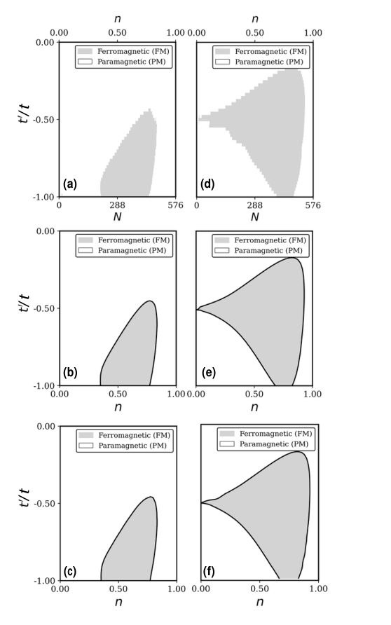
<figcaption class="paper-figure-caption"><b>Fig 1.</b> FIG. 1. Phase diagrams at U = 9t. The grey region de- notes the stability region of the fully polarized ferromagnetic state obtained within the T-matrix approximation (TMA). one-diagonal hopping lattice: (a) for L = 24, where the hor- izontal axis represents the electron number N and n is the filling factor. (b) for L = 100 and (c) for the thermodynamic limit. two-diagonal hopping lattice: (d) for L = 24, (e) for L = 100, and (f) for the thermodynamic limit.</figcaption>
</figure>
<figure class="paper-figure-card">
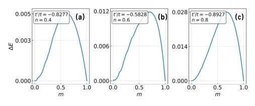
<figcaption class="paper-figure-caption"><b>Fig 2.</b> FIG. 2. Magnetization (n↑−n↓)/n as a function of energy difference ∆E at different points near the phase boundary for U = 9t, L = 100: (a) t′/t = −0.8277, n = 0.4; (b) t′/t = −0.5828, n = 0.6; (c) t′/t = −0.8927, n = 0.8.</figcaption>
</figure>
<figure class="paper-figure-card">
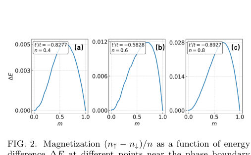
<figcaption class="paper-figure-caption"><b>Fig 3.</b> Figure 1 summarizes the phase diagrams obtained within the T-matrix approximation at U = 9t. Panels (a)–(c) correspond to the one-diagonal hopping model, while panels (d)–(f) show the corresponding results for the two-diagonal hopping model. In each case, we com- pare a small finite cluster, a large finite cluster, and the thermodynamic limit. The grey region denotes the sta- bility region of the fully polarized ferromagnetic state. For the one-diagonal hopping model, our results repro- duce the ferromagnetic regime observed experimentally at intermediate densities. Ferromagnetism appears for sufficiently large negative values of t′/t over a broad den- sity window extending roughly from n...</figcaption>
</figure>
<figure class="paper-figure-card">
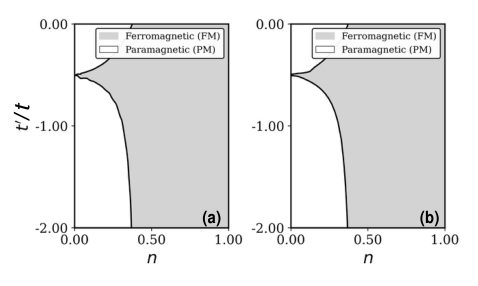
<figcaption class="paper-figure-caption"><b>Fig 4.</b> FIG. 4. Phase diagrams for the two-diagonal hopping model at infinite interaction strength (U →+∞): (a) large finite cluster with L = 48, and (b) in the thermodynamic limit.</figcaption>
</figure>
<figure class="paper-figure-card">
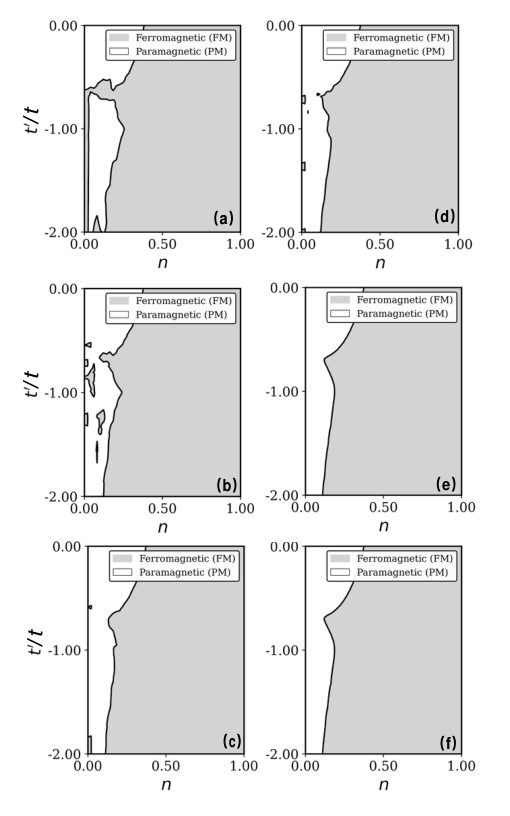
<figcaption class="paper-figure-caption"><b>Fig 5.</b> FIG. 3. Phase diagrams for the one-diagonal hopping model at infinite interaction strength (U →+∞) across different cluster sizes: (a) 6 × 20, (b) 10 × 20, and (c) 16 × 20 finite clusters; and square clusters of size (d) L = 20, (e) L = 48, and (f) L = 56.</figcaption>
</figure>
</div>

<p><strong>Summary.</strong> This work investigates the conditions required for low-density ferromagnetism in Fermi-Hubbard models realized with ultracold atoms. By comparing two lattice geometries, the authors demonstrate that while both exhibit band degeneracy, only the model with a stronger quasi-one-dimensional density of states singularity supports robust ferromagnetism in the thermodynamic limit. This proves that DOS structure, not just degeneracy, is the controlling factor.</p>
<p><strong>Why it may be interesting.</strong> It provides a rigorous theoretical counterexample showing that simple geometric symmetries or degeneracies are insufficient predictors for complex many-body phenomena like ferromagnetism, emphasizing the role of spectral structure (DOS) in quantum matter.</p>
<details>
<summary>Detailed structure</summary>
<p><strong>Main problem.</strong> To determine if band-minimum degeneracy alone is sufficient to stabilize low-density ferromagnetism in itinerant quantum many-body systems.</p>
<p><strong>Main result.</strong> The stability of low-density ferromagnetism is controlled not by the mere degeneracy of band minima, but by the singular behavior (the strength) of the density of states at the band bottom.</p>
<p><strong>Method.</strong> Theoretical analysis using the T-matrix approximation to calculate ground state energies and compare finite-size versus thermodynamic limit results for different lattice models.</p>
<p><strong>Model / system.</strong> The study analyzes two geometries of the Fermi–Hubbard model realized in ultracold atoms within an optical lattice: one with one-diagonal hopping and another with two-diagonal hopping on a square lattice.</p>
<p><strong>Key observables.</strong> Ferromagnetic phase stability, system size dependence (finite vs. thermodynamic limit), and the functional form of the density of states singularity at the band bottom.</p>
<p><strong>Important parameters / regimes.</strong> Electron filling ($n$), interaction strength ($U/t$), hopping parameters ($t'/t$), and lattice dimensionality/hopping structure.</p>
<p><strong>Assumptions / limitations.</strong> The T-matrix approximation is assumed to be highly accurate in the dilute electron density limit, where correlations are dominated by two-body collisions.</p>
<p><strong>Figures summary.</strong> Figures compare phase diagrams across different cluster sizes and interaction strengths for both hopping models, showing that ferromagnetism persists only in the thermodynamic limit for the two-diagonal model due to its stronger DOS singularity.</p>
<p><strong>Paper structure.</strong> The paper establishes the physical context (ultracold atoms/Müller–Hartmann mechanism), compares two lattice models exhibiting band degeneracy, and systematically uses finite-size scaling and DOS analysis to prove that the strength of the DOS singularity dictates magnetic stability.</p>
</details>
<details>
<summary>Abstract</summary>
<p>Recent ultracold-atom experiments have observed ferromagnetic correlations in a geometrically tunable Fermi--Hubbard lattice at intermediate densities. Motivated by subsequent theoretical work that connected the low-density limit of the same model to the Mueller--Hartmann mechanism for itinerant ferromagnetism, we investigate the stability of ferromagnetism across a broad density range using the T-matrix approximation, a controlled approach in the dilute limit. We reproduce the ferromagnetic regime observed experimentally at intermediate densities and systematically compare finite-size and thermodynamic-limit calculations in the dilute regime. We find that the low-density ferromagnetic phase reported for the one-diagonal hopping lattice is strongly suppressed with increasing system size and disappears in the thermodynamic limit, indicating that it originates from finite-size effects. By contrast, low-density ferromagnetism remains robust in the square-lattice Hubbard model with hopping along both diagonal directions. We show that this qualitative difference cannot be explained by the degeneracy of the band minima alone, which occurs in both models. Instead, it is controlled by the singular behavior of the density of states at the band bottom: a weak divergence is insufficient to stabilize ferromagnetism, whereas a much stronger quasi-one-dimensional singularity supports a fully polarized ground state even in the dilute limit. Our results demonstrate that band-minimum degeneracy alone is not sufficient for low-density ferromagnetism and that the nature of the band-bottom density-of-states singularity ultimately controls its stability.</p>
</details>
<p><sub><a href="#top">↑ back to top</a></sub></p>

<p><a id="paper-2606.15484"></a></p>
<h3 id="quantum-fisher-information-and-the-speed-of-entanglement"><a href="http://arxiv.org/abs/2606.15484v1">Quantum Fisher Information and the Speed of Entanglement</a></h3>
<p><strong>Authors:</strong> Zain H. Saleem<br>
<strong>Type:</strong> theory · <strong>Category:</strong> quantum information and computing · <strong>PDF:</strong> <a href="https://arxiv.org/pdf/2606.15484v1">https://arxiv.org/pdf/2606.15484v1</a><br>
<strong>Analysis basis:</strong> full PDF text, analyzed in chunks
<strong>Topic relevance:</strong> 🔥 <code>entanglement &amp; information structure</code> <strong>4/5</strong> · <code>non-equilibrium dynamics</code> <strong>1/5</strong></p>
<div class="figure-strip-hint">↔ Scroll figures horizontally</div>
<div class="paper-figures-scroll">
<figure class="paper-figure-card">
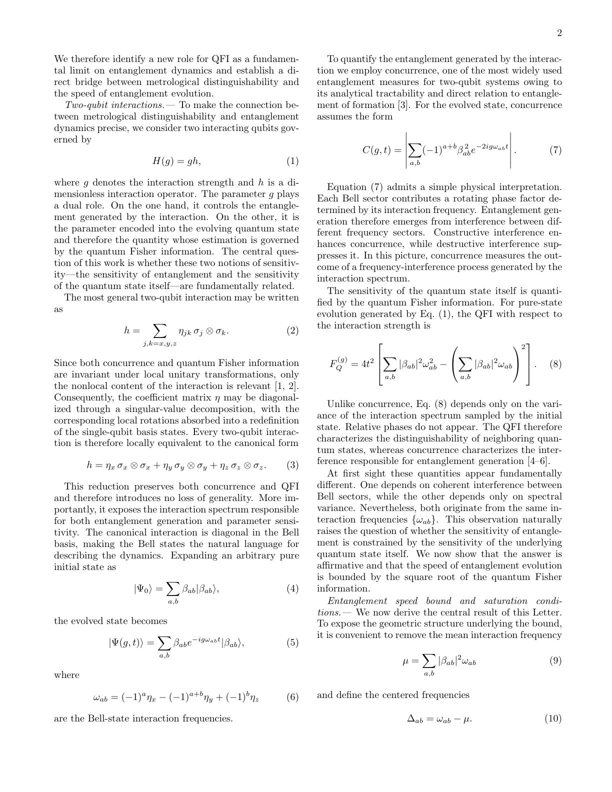
<figcaption class="paper-figure-caption"><b>Fig 1.</b> Low-resolution page preview, page 2</figcaption>
</figure>
<figure class="paper-figure-card">
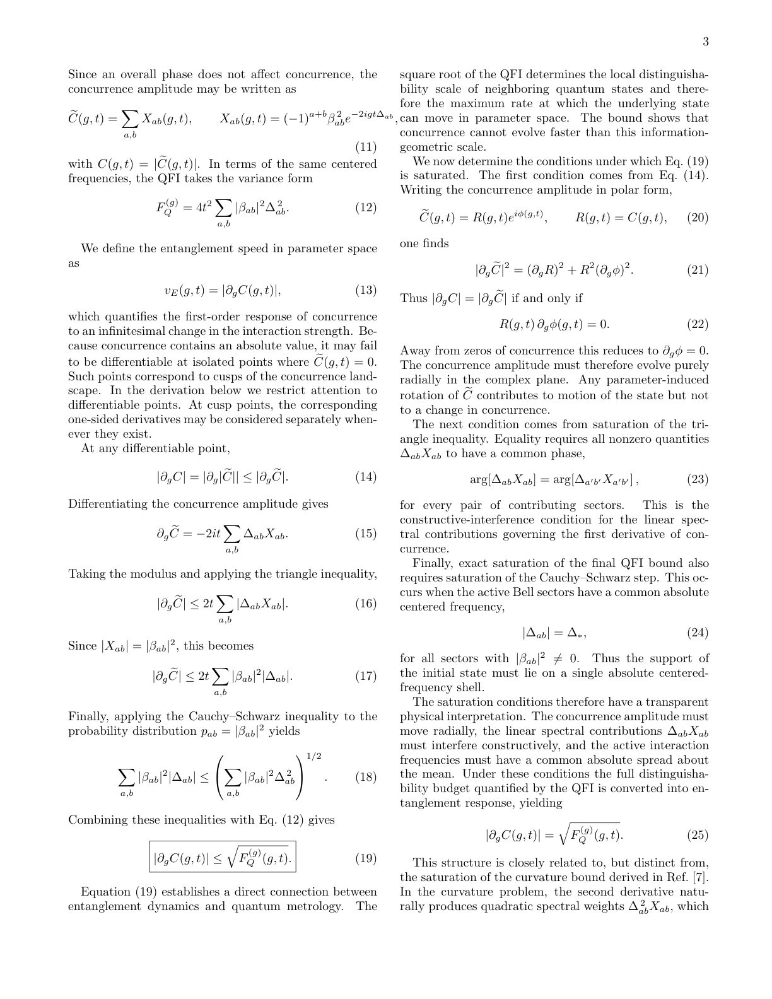
<figcaption class="paper-figure-caption"><b>Fig 2.</b> Low-resolution page preview, page 3</figcaption>
</figure>
<figure class="paper-figure-card">
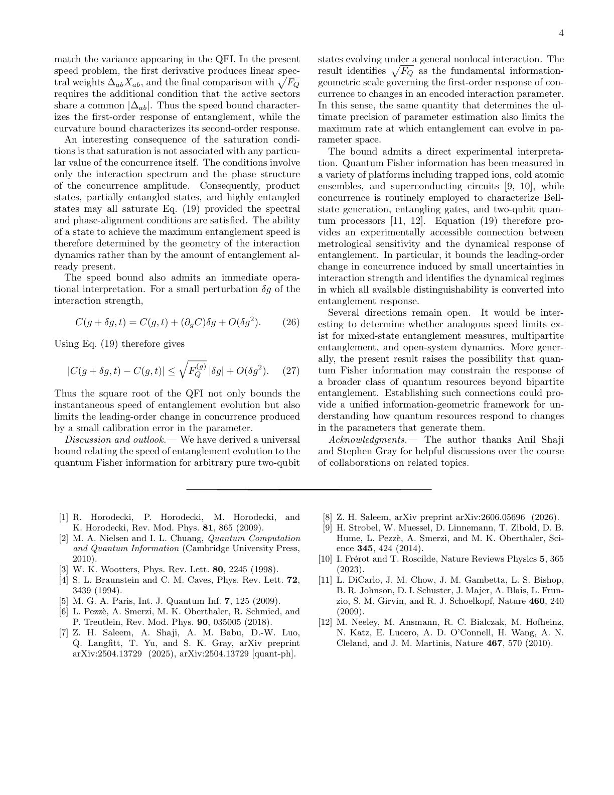
<figcaption class="paper-figure-caption"><b>Fig 3.</b> Low-resolution page preview, page 4</figcaption>
</figure>
</div>

<p><strong>Summary.</strong> This theoretical paper establishes a fundamental upper bound connecting the speed of entanglement generation to the Quantum Fisher Information (QFI). By analyzing two-qubit evolution, it proves that the rate at which entanglement changes cannot exceed a value determined by the QFI. This result unifies concepts from quantum metrology and entanglement dynamics.</p>
<p><strong>Why it may be interesting.</strong> It provides a powerful, information-theoretic constraint on quantum dynamics, linking resource generation (entanglement) directly to parameter estimation precision (QFI), which is crucial for understanding optimal control in quantum systems.</p>
<details>
<summary>Detailed structure</summary>
<p><strong>Main problem.</strong> The study investigates establishing a fundamental upper bound on the speed at which entanglement can be generated by varying an interaction parameter in a two-qubit system.</p>
<p><strong>Main result.</strong> A direct inequality, $|\partial_g C| \leq \sqrt{	ext{QFI}}$, is derived, showing that the Quantum Fisher Information (QFI) limits the rate of change of concurrence with respect to the coupling parameter $g$.</p>
<p><strong>Method.</strong> The analysis employs rigorous mathematical bounding techniques, including differentiation and applying inequalities like Cauchy–Schwarz, to relate the derivative of entanglement measures to information-theoretic quantities.</p>
<p><strong>Model / system.</strong> The system consists of two interacting qubits governed by a general nonlocal Hamiltonian $H(g) = g h$. The dynamics are analyzed for pure states evolving under this interaction parameterization.</p>
<p><strong>Key observables.</strong> Concurrence ($C$), Quantum Fisher Information ($   ext{QFI}$), and the entanglement speed, defined as $|\partial_g C|$.</p>
<p><strong>Important parameters / regimes.</strong> The coupling parameter $g$, which controls the evolution; the QFI itself acts as a limiting scale.</p>
<p><strong>Assumptions / limitations.</strong> The derivation is primarily restricted to pure two-qubit states undergoing smooth evolution where concurrence is differentiable.</p>
<p><strong>Paper structure.</strong> The paper develops the bound by first defining the entanglement speed via the derivative of concurrence, then relating this derivative to the QFI using mathematical inequalities, and finally characterizing the conditions under which this upper bound is saturated.</p>
</details>
<details>
<summary>Abstract</summary>
<p>We investigate the speed at which entanglement can be generated by an interaction parameter encoded in a two-qubit Hamiltonian, quantified by the derivative of concurrence with respect to the coupling parameter. For arbitrary pure two-qubit states evolving under a general nonlocal interaction, we derive a bound relating this entanglement speed to the quantum Fisher information (QFI). Specifically, we show that $|\partial_g C| \le \sqrt{F_Q^{(g)}}$, where $F_Q^{(g)}$ is the QFI associated with estimation of the parameter. This establishes $\sqrt{F_Q}$ as a an upper bound on the speed of entanglement generation in parameter space. We further derive the saturation conditions and identify the states and dynamical regimes for which equality is attained. At saturation, concurrence evolves at the maximum rate permitted by the distinguishability of the underlying quantum state. These results reveal a direct connection between quantum metrology and entanglement generation, showing that the same information-theoretic quantity that governs parameter-estimation precision also limits the speed at which entanglement resources can be created.</p>
</details>
<p><sub><a href="#top">↑ back to top</a></sub></p>

<p><a id="paper-2606.16265"></a></p>
<h3 id="bi-qutrit-entangled-edge-states-of-positive-partial-transposes-with-largest-ranks"><a href="http://arxiv.org/abs/2606.16265v1">Bi-qutrit entangled edge states of positive partial transposes with largest ranks</a></h3>
<p><strong>Authors:</strong> Kyung Hoon Han, Seung-Hyeok Kye<br>
<strong>Type:</strong> theory · <strong>Category:</strong> quantum information and computing · <strong>PDF:</strong> <a href="https://arxiv.org/pdf/2606.16265v1">https://arxiv.org/pdf/2606.16265v1</a><br>
<strong>Analysis basis:</strong> full PDF text, analyzed in chunks
<strong>Topic relevance:</strong> 🔥 <code>entanglement &amp; information structure</code> <strong>4/5</strong></p>
<div class="figure-strip-hint">↔ Scroll figures horizontally</div>
<div class="paper-figures-scroll">
<figure class="paper-figure-card">
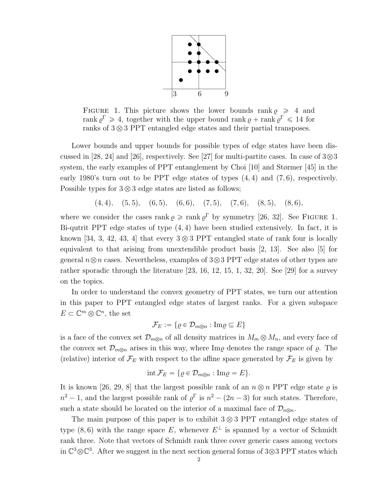
<figcaption class="paper-figure-caption"><b>Fig 1.</b> Low-resolution page preview, page 2</figcaption>
</figure>
<figure class="paper-figure-card">
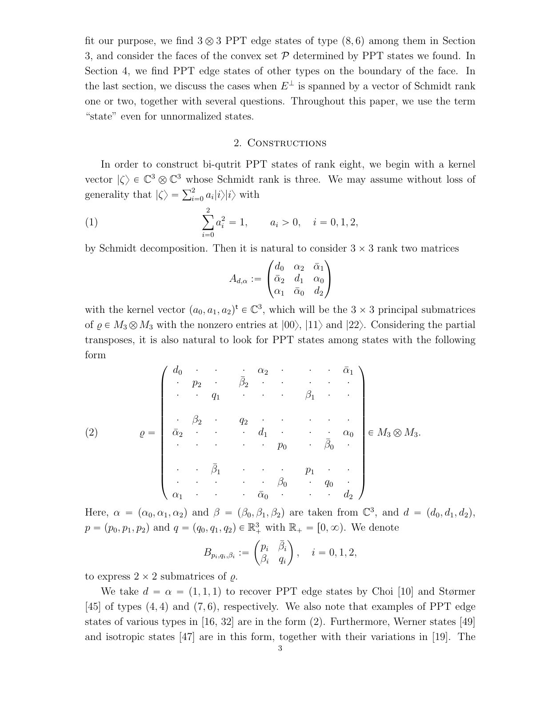
<figcaption class="paper-figure-caption"><b>Fig 2.</b> Low-resolution page preview, page 3</figcaption>
</figure>
<figure class="paper-figure-card">
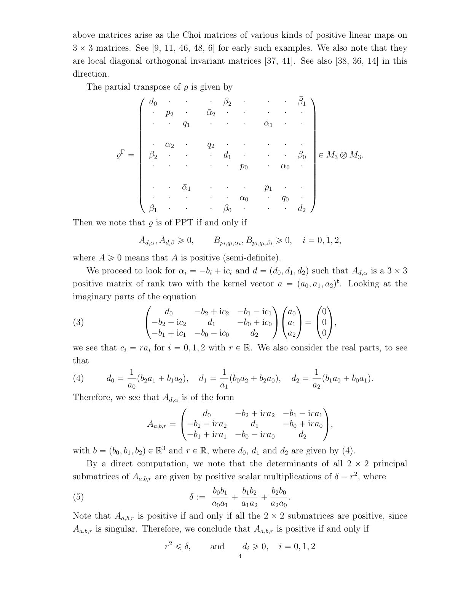
<figcaption class="paper-figure-caption"><b>Fig 3.</b> Low-resolution page preview, page 4</figcaption>
</figure>
<figure class="paper-figure-card">
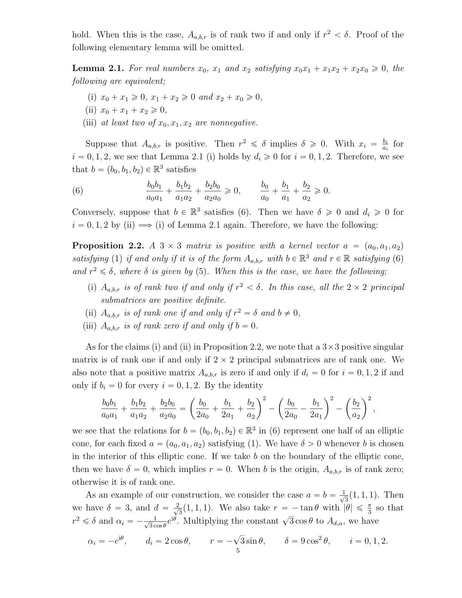
<figcaption class="paper-figure-caption"><b>Fig 4.</b> Low-resolution page preview, page 5</figcaption>
</figure>
<figure class="paper-figure-card">
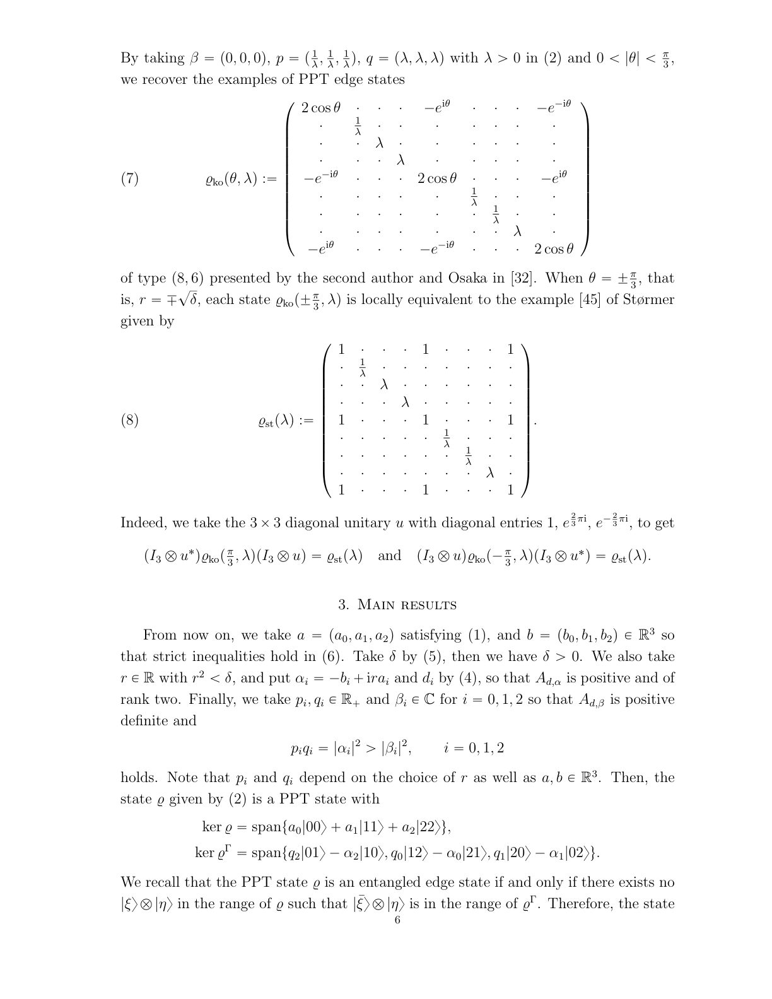
<figcaption class="paper-figure-caption"><b>Fig 5.</b> Low-resolution page preview, page 6</figcaption>
</figure>
</div>

<p><strong>Summary.</strong> The paper mathematically characterizes bi-qutrit entangled edge states that satisfy the Positive Partial Transpose (PPT) criterion. By analyzing the geometry of the set of all PPT states, the authors construct specific families of high-rank states and map out their existence on the boundaries of key faces within this state space.</p>
<p><strong>Why it may be interesting.</strong> This work provides deep structural insights into entanglement detection in small quantum systems using necessary conditions like PPT, which is fundamental for understanding resource theories in quantum information.</p>
<details>
<summary>Detailed structure</summary>
<p><strong>Main problem.</strong> The primary goal is characterizing the structure of the convex set $P$ of all Positive Partial Transpose (PPT) quantum states, specifically focusing on identifying PPT entangled edge states.</p>
<p><strong>Main result.</strong> The authors exhibit a large family of bi-qutrit PPT entangled edge states of type $(8,6)$ and demonstrate how other types can be found on the boundaries of the faces defining this set.</p>
<p><strong>Method.</strong> The analysis involves rigorous mathematical characterization using concepts like faces of convex sets, analyzing rank conditions for partial transposes, and solving systems of linear equations derived from positivity constraints.</p>
<p><strong>Model / system.</strong> The study focuses on quantum states ($\varrho$) within the bi-qutrit system ($3 \otimes 3$). The mathematical framework involves defining these states relative to subspaces $E$ and analyzing their partial transposes $\varrho^\Gamma$.</p>
<p><strong>Key observables.</strong> Ranks of the state ($  ext{rank}(\varrho)$) and its partial transpose ($   ext{rank}(\varrho^\Gamma)$); the classification type $(p_h, k_q)$.</p>
<p><strong>Important parameters / regimes.</strong> The dimensions (bi-qutrit system), specific parameters defining the states ($a_i, b_i, r, \alpha_i$), and the Schmidt rank of associated kernel vectors.</p>
<p><strong>Assumptions / limitations.</strong> The analysis often assumes the existence of a kernel vector $|\zeta
angle$ with a specified Schmidt rank (e.g., three) to cover generic cases in $\mathbb{C}^3 \otimes \mathbb{C}^3$.</p>
<p><strong>Figures summary.</strong> Figure 1 illustrates lower and upper bounds on the ranks for $3\otimes 3$ PPT entangled edge states. Figure 2 uses geometric arguments involving intersecting circles/discs to prove the existence of suitable parameters.</p>
<p><strong>Paper structure.</strong> The paper proceeds by defining the mathematical constraints (PPT condition, face structure) for the bi-qutrit system. It then constructs specific families of states achieving high ranks (e.g., type $(8,6)$) and explores related boundary cases by varying parameters within the defined faces.</p>
</details>
<details>
<summary>Abstract</summary>
<p>Whenever $E$ is an eight dimensional subspace of the bi-qutrit quantum system whose orthogonal complement is spanned by a vector of Schmidt rank three, we show that there exist PPT entangled edge states with the range space $E$ whose partial transposes are of rank six, which is the largest possible rank. In this way, we exhibit a huge family of bi-qutrit PPT entangled edge states of type $(8,6)$. They make faces of the convex set of all PPT states, and we find bi-qutrit PPT entangled edge states of other types on the boundaries of such faces.</p>
</details>
<p><sub><a href="#top">↑ back to top</a></sub></p>

<p><a id="paper-2606.16712"></a></p>
<h3 id="complete-entanglement-detection-using-polynomial-invariants"><a href="http://arxiv.org/abs/2606.16712v1">Complete entanglement detection using polynomial invariants</a></h3>
<p><strong>Authors:</strong> Thomas C. Fraser, Vjosa Blakaj, Roberto Rubboli, Felix Huber, Marco Fanizza<br>
<strong>Type:</strong> theory · <strong>Category:</strong> quantum information and computing · <strong>PDF:</strong> <a href="https://arxiv.org/pdf/2606.16712v1">https://arxiv.org/pdf/2606.16712v1</a><br>
<strong>Analysis basis:</strong> full PDF text, analyzed in chunks
<strong>Topic relevance:</strong> 🔥 <code>entanglement &amp; information structure</code> <strong>4/5</strong></p>
<div class="figure-strip-hint">↔ Scroll figures horizontally</div>
<div class="paper-figures-scroll">
<figure class="paper-figure-card">
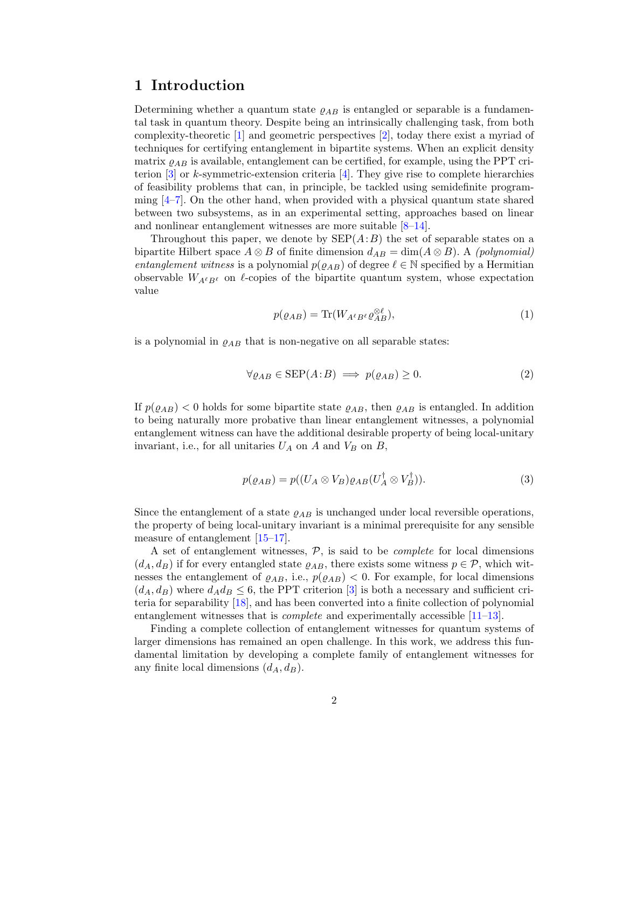
<figcaption class="paper-figure-caption"><b>Fig 1.</b> Low-resolution page preview, page 2</figcaption>
</figure>
<figure class="paper-figure-card">
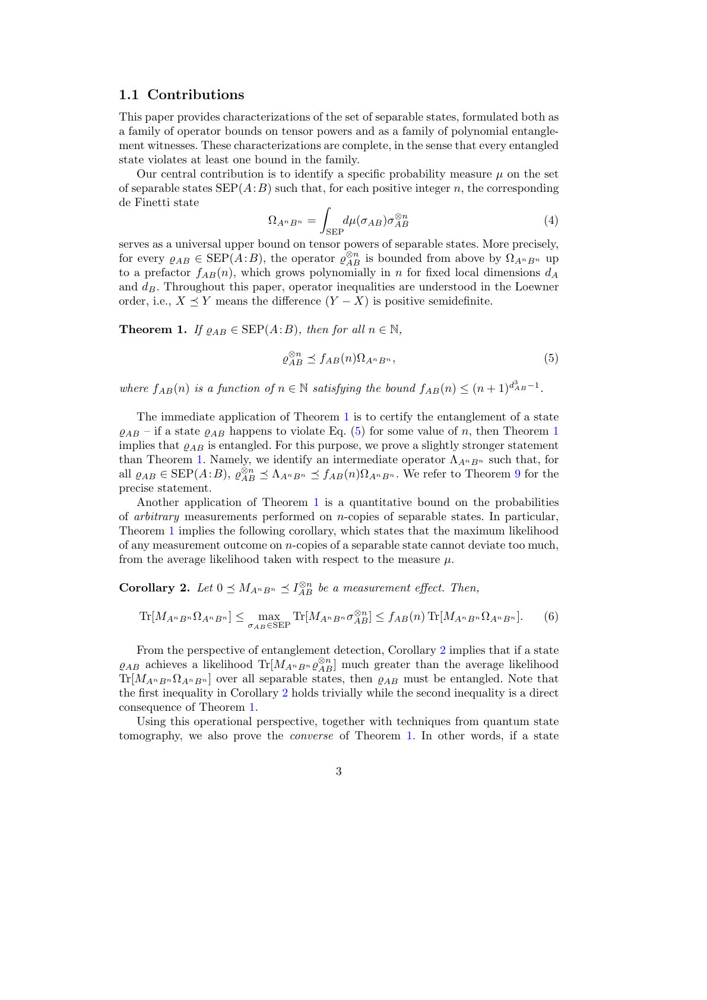
<figcaption class="paper-figure-caption"><b>Fig 2.</b> Low-resolution page preview, page 3</figcaption>
</figure>
<figure class="paper-figure-card">
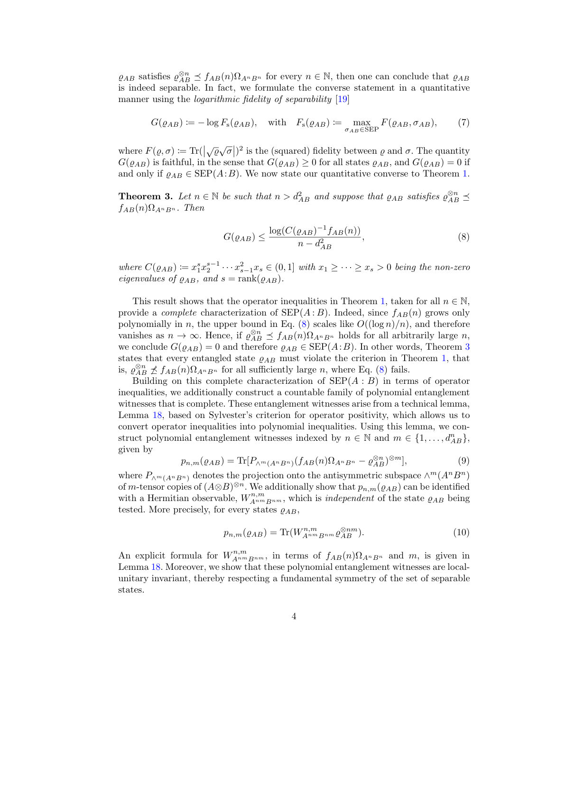
<figcaption class="paper-figure-caption"><b>Fig 3.</b> Low-resolution page preview, page 4</figcaption>
</figure>
<figure class="paper-figure-card">
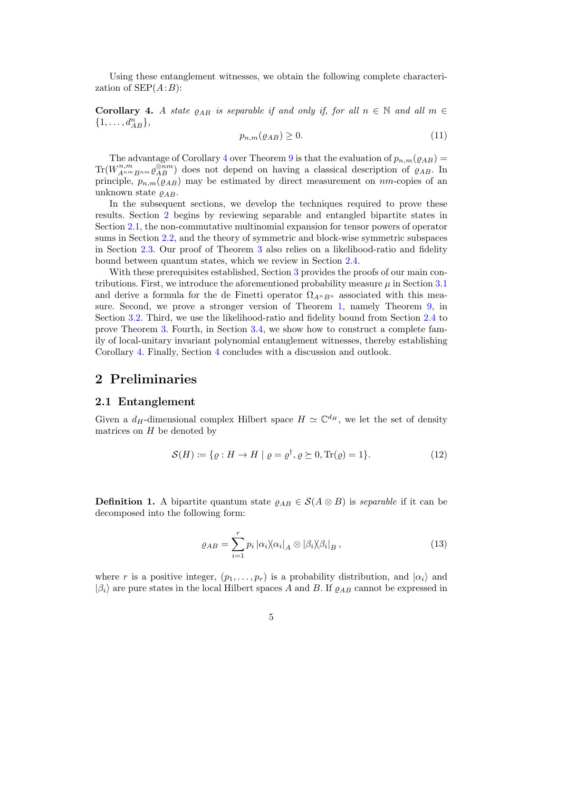
<figcaption class="paper-figure-caption"><b>Fig 4.</b> Low-resolution page preview, page 5</figcaption>
</figure>
<figure class="paper-figure-card">
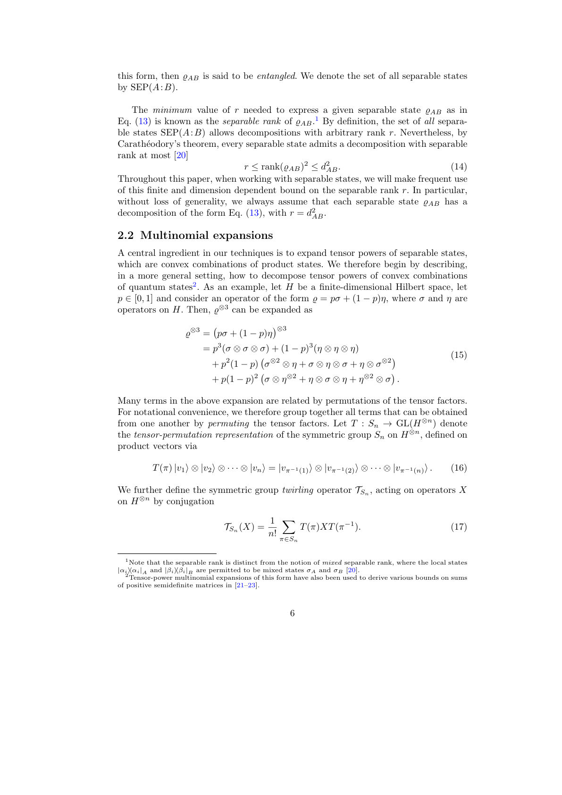
<figcaption class="paper-figure-caption"><b>Fig 5.</b> Low-resolution page preview, page 6</figcaption>
</figure>
</div>

<p><strong>Summary.</strong> The paper presents a unified framework to detect entanglement in bipartite quantum states by deriving universal bounds on tensor powers of separable states. It achieves this by constructing a complete family of local-unitary invariant polynomial entanglement witnesses, thereby overcoming the limitations of existing numerical or incomplete detection methods.</p>
<p><strong>Why it may be interesting.</strong> This work provides fundamental theoretical tools for characterizing quantum correlations, moving beyond numerical optimization or incomplete measurements by establishing necessary and sufficient algebraic conditions for separability.</p>
<details>
<summary>Detailed structure</summary>
<p><strong>Main problem.</strong> The core problem is developing a complete method to determine if a bipartite quantum state $\varrho_{AB}$ is separable or entangled.</p>
<p><strong>Main result.</strong> The authors establish that separability can be characterized by the non-negativity of an infinite, but countable, family of polynomial entanglement witnesses derived from operator inequalities involving tensor powers of the state.</p>
<p><strong>Method.</strong> The methodology involves deriving universal bounds on tensor powers of separable states ($\varrho^{\otimes n}_{AB}$) using de Finetti measures and then translating these operator inequalities into explicit, basis-independent polynomial invariants (entanglement witnesses).</p>
<p><strong>Model / system.</strong> The analysis focuses on bipartite quantum states $\varrho_{AB}$ acting on a finite dimensional Hilbert space $A \otimes B$. The theory utilizes concepts from invariant theory, semialgebraic geometry, and the structure of symmetric subspaces.</p>
<p><strong>Key observables.</strong> Entanglement witnesses ($p_{n,m}(\rho_{AB})$), logarithmic fidelity of separability ($G(\varrho_{AB})$), and operator inequalities ($\omega \preceq \Lambda$).</p>
<p><strong>Important parameters / regimes.</strong> The local dimensions $(d_A, d_B)$ of the subsystems; the tensor power $n$; and the degree $m$ of the polynomial witnesses.</p>
<p><strong>Assumptions / limitations.</strong> For finite dimensions, the set of separable states is semialgebraic, implying a theoretical finite basis for the complete witness set, although this is computationally prohibitive to find.</p>
<p><strong>Figures summary.</strong> Not specified in the notes; the structure relies on mathematical theorems and corollaries establishing equivalences between bounds, fidelity decay, and polynomial non-negativity.</p>
<p><strong>Paper structure.</strong> The paper builds logically: first by deriving operator bounds on tensor powers (Theorem 1), then proving these bounds characterize separability via fidelity decay (Theorem 3), and finally translating this characterization into a complete set of local-unitary invariant polynomial entanglement witnesses (Corollary 4/12).</p>
</details>
<details>
<summary>Abstract</summary>
<p>Existing methods for deciding whether a bipartite quantum state is separable or entangled typically fall into one of two categories: they are either complete but require access to an explicit density matrix followed by numerical optimization, or they can be evaluated directly by measuring the quantum system but are incomplete, in the sense that they cannot detect all forms of entanglement. In this work, we overcome both limitations in a unified framework. First, we bypass numerical optimization by deriving separability criteria in the form of universal bounds on tensor powers of separable states. We prove that these bounds are complete: every entangled state violates them for sufficiently large tensor powers. Second, we explicitly construct a corresponding complete family of nonlinear entanglement witnesses, which can detect all forms of entanglement without requiring an explicit density matrix. The witnesses we construct are moreover basis-independent, in the sense that they are invariant under conjugation by local unitaries. Altogether, our results expand the toolbox for entanglement detection in arbitrary local dimensions in a manifestly invariant way.</p>
</details>
<p><sub><a href="#top">↑ back to top</a></sub></p>

<p><a id="paper-2606.15344"></a></p>
<h3 id="generative-modelling-powered-by-room-temperature-polariton-condensates"><a href="http://arxiv.org/abs/2606.15344v1">Generative modelling powered by room-temperature polariton condensates</a></h3>
<p><strong>Authors:</strong> Yuan Wang, Marcin Muszynski, Avinash Dash, Rishabh Kaurav, Vinod M. Menon, Oleksandr Kyriienko<br>
<strong>Type:</strong> both · <strong>Category:</strong> disordered systems and neural networks · <strong>PDF:</strong> <a href="https://arxiv.org/pdf/2606.15344v1">https://arxiv.org/pdf/2606.15344v1</a><br>
<strong>Analysis basis:</strong> full PDF text, analyzed in chunks
<strong>Topic relevance:</strong> <code>correlated cavity matter</code> <strong>3/5</strong> · <code>driven-dissipative phase transition</code> <strong>3/5</strong> · <code>methods for driven-dissipative</code> <strong>3/5</strong> · <code>quantum optics experiment</code> <strong>3/5</strong> · <code>analog quantum simulation</code> <strong>2/5</strong> · <code>correlated / nonlocal dissipation</code> <strong>2/5</strong> · <code>non-equilibrium dynamics</code> <strong>2/5</strong> · <code>QC/QI experiment</code> <strong>1/5</strong> · <code>Tavis-Cummings &amp; cavity-many-emitter</code> <strong>1/5</strong> · <code>interference shaping light</code> <strong>1/5</strong> · <code>non-equilibrium universality</code> <strong>1/5</strong></p>
<div class="figure-strip-hint">↔ Scroll figures horizontally</div>
<div class="paper-figures-scroll">
<figure class="paper-figure-card">
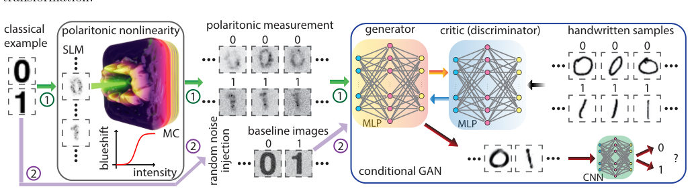
<figcaption class="paper-figure-caption"><b>Fig 1.</b> FIG. 1. Workflow for polaritonic conditional generative adversarial network (GAN) for digit-to-image trans- lation. The system operates in two training modes. In the condensate mode ( 1 ○, green arrows) classical digit examples (‘0’ or ‘1’) are encoded using a spatial light modulator (SLM) and injected into a polariton condensate system. The resulting photoluminescence (PL) produces transformed digit images through nonlinear condensate dynamics. In the baseline mode ( 2 ○, purple arrows), random noise is used without any physical processing. Both modes together with their corresponding labels (shown on the top of each image) feed into the conditional GAN framework, where a multilayer...</figcaption>
</figure>
<figure class="paper-figure-card">
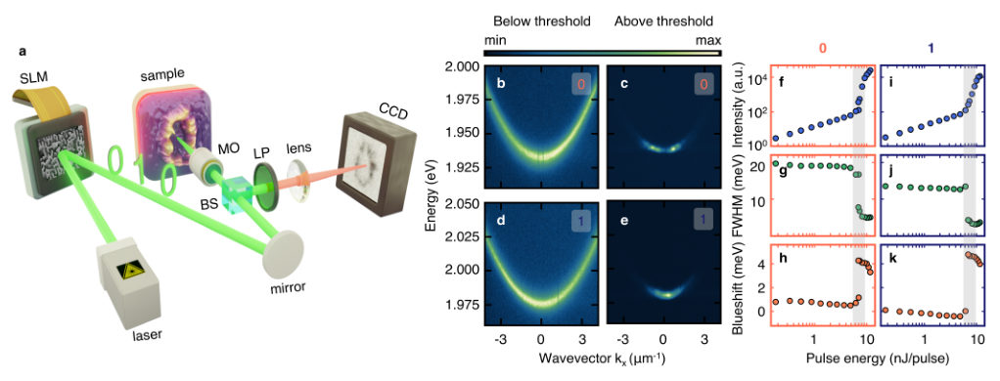
<figcaption class="paper-figure-caption"><b>Fig 2.</b> FIG. 2. Experimental realization of polaritonic generative modeling. (a) Scheme of the experimental setup for nonlinear image transformation. SLM, spatial light modulator; MO, microscope objective; BS, beam splitter; LP, longpass filter; CCD, charge-coupled device camera. (b–e) Normalized momentum-resolved photoluminescence spectra collected (b,d) below and (c,e) above the condensation threshold for excitation with a ‘0’ (b,c) and a ‘1’ (d,e) laser intensity profile. (f,i) Integrated photoluminescence intensity, (g,j) full width at half maximum, and (h,k) emission blueshift as a function of excitation pulse energy for the ‘0’ (f–h) and ‘1’ (i–k) excitation profiles. Gray shaded regions...</figcaption>
</figure>
<figure class="paper-figure-card">

<figcaption class="paper-figure-caption"><b>Fig 3.</b> Fig. 3 presents the training dynamics and performance comparison between the two modes. Figs. 3 (a) and (d) show the evolution of generator and critic losses over 100 training epochs for the condensate and baseline modes, respectively. In adversarial training, these losses do not converge to zero but rather reach a dynamic equilibrium [65]: when the generator produces realistic samples that successfully fool the critic, the generator loss decreases while the critic loss increases as it struggles to distinguish real data from generated data. However, loss values alone do not reveal the full picture of model performance. A fundamental challenge in generative modeling is mode collapse [65,...</figcaption>
</figure>
<figure class="paper-figure-card">
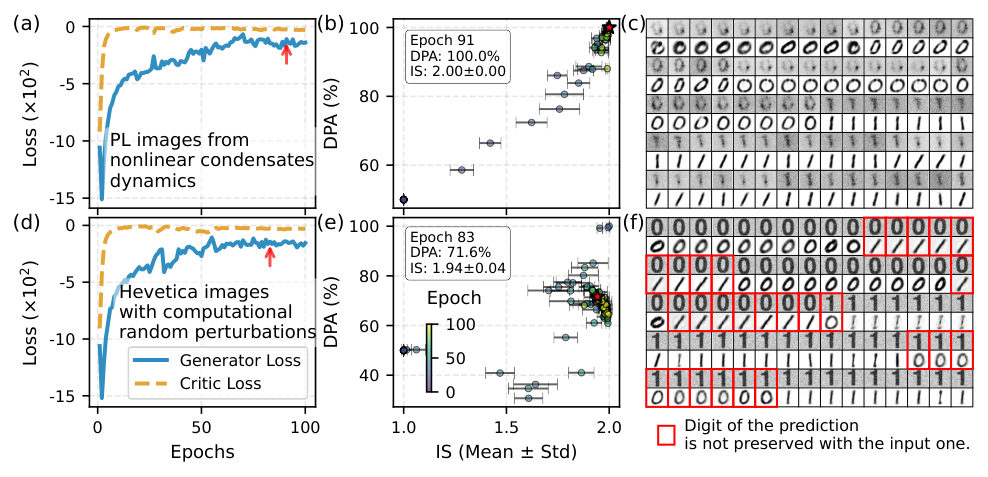
<figcaption class="paper-figure-caption"><b>Fig 4.</b> FIG. 3. Training dynamics and performance of condensate and baseline conditional GAN modes. (a, d) Generator and critic loss evolution over 100 training epochs for (a) condensate mode using PL images generated through nonlinear condensate dynamics and (d) baseline mode using standard Helvetica digits with computational random perturbations. Red arrows indicate best epochs selected for the model of the generator (epoch 91 and 83, respectively). (b, e) Digit preservation accuracy (DPA) versus inception score (IS) across all training epochs for (b) condensate mode and (e) baseline mode. Each marker represents model at one epoch shown with different color, with error bars showing IS standard...</figcaption>
</figure>
<figure class="paper-figure-card">

<figcaption class="paper-figure-caption"><b>Fig 5.</b> Figure 3 presents training dynamics and performance comparison for one representative seed. Fig. 3(a, d) display the evolution of generator and critic losses over training. Both modes exhibit the characteristic adversarial equilibrium where losses fluctuate rather than converge to zero [65]. To assess model quality, we evaluate each epoch using DPA and IS. Fig. 3(b, e) show these metrics across all training epochs. The condensate model [Fig. 3(b)] demonstrates a clear progression toward the optimal upper-right region (high DPA, high IS), achieving perfect digit preservation (DPA = 100.0%) with maximum IS = 2.00 at epoch 91. Conversely, the baseline model [Fig. 3 (e)] struggles to...</figcaption>
</figure>
</div>

<p><strong>Summary.</strong> The paper demonstrates that nonlinear optical systems, specifically room-temperature exciton-polariton condensates, can function as physical stochastic layers within Generative Adversarial Networks. By using the inherent dynamics of these condensates for data sampling in digit-to-image translation, they achieve superior performance compared to purely digital noise injection methods. This establishes polariton condensation as a novel computational resource for physics-enhanced machine learning.</p>
<p><strong>Why it may be interesting.</strong> This work directly bridges condensed matter/quantum optics (polaritons) with machine learning (GANs), proposing a concrete pathway for realizing physics-based hardware accelerators for AI tasks, which is highly relevant to open quantum systems research.</p>
<details>
<summary>Detailed structure</summary>
<p><strong>Main problem.</strong> The core challenge is developing generative models that require efficient stochastic nonlinear transformations, necessitating the use of physical platforms to overcome computational limitations.</p>
<p><strong>Main result.</strong> Polariton condensation was successfully demonstrated as a viable room-temperature photonic resource for conditional generative modeling, outperforming purely digital or laser-based sampling methods in terms of image quality and diversity.</p>
<p><strong>Method.</strong> A workflow integrating a Generative Adversarial Network (GAN) with the nonlinear dynamics of exciton-polariton condensates is employed to perform conditional digit-to-image translation.</p>
<p><strong>Model / system.</strong> The physical system utilizes room-temperature exciton-polariton condensates formed in organic dye microcavities, which provide a naturally stochastic and nonlinear transformation layer for the GAN's latent space.</p>
<p><strong>Key observables.</strong> Inception Score (IS), Digit Preservation Accuracy (DPA), Structural Similarity Index (SSIM), and Pixel Variance are used to quantify generation quality, diversity, and semantic correctness.</p>
<p><strong>Important parameters / regimes.</strong> Strong light-matter coupling regime; operating temperature near room temperature; the nonlinear many-body dynamics of polaritons.</p>
<p><strong>Assumptions / limitations.</strong> The intrinsic stochasticity and spatially correlated nature of the polariton condensate's nonlinear response can be harnessed as a structured computational resource for generative modeling.</p>
<p><strong>Figures summary.</strong> Figures compare performance metrics (IS, DPA) across condensate-enabled GANs versus digital baseline methods, showing superior results for the former. Other figures illustrate PL spectra and the workflow setup.</p>
<p><strong>Paper structure.</strong> The paper establishes the need for physical stochastic transformations in generative modeling; it details the experimental realization using polariton condensates as a physical layer within a conditional GAN framework; finally, it presents quantitative comparisons proving the superiority of this physics-enhanced approach over digital baselines.</p>
</details>
<details>
<summary>Abstract</summary>
<p>Generative modelling requires efficient stochastic nonlinear transformations and physical platforms that can naturally realise them. We experimentally demonstrate that nonlinear optical systems operating in the strong light-matter coupling regime can serve as physical transformation layers for conditional generative modelling. Specifically, we develop a workflow in which room-temperature exciton-polariton condensates formed in organic dye microcavities act as a physical stochastic transform within a generative adversarial network and enable conditional digit-to-image translation. By using the nonlinear many-body dynamics and intrinsic stochasticity of polariton condensates, the workflow outperforms baseline approaches based on digitally injected perturbations. We find that polariton-enabled sampling via generative adversarial network (Polariton GAN) yields improved inception score, digit preservation accuracy and structural similarity compared with both digital sampling and laser-based systems. We further show that spatially correlated output variations can naturally regularise adversarial training and enhance output diversity. Our results establish polariton condensation as a new computational resource for generative modelling, opening a pathway towards physics-enhanced machine learning systems.</p>
</details>
<p><sub><a href="#top">↑ back to top</a></sub></p>

<p><a id="paper-2606.15922"></a></p>
<h3 id="a-gauge-covariant-geometric-framework-for-non-hermitian-quantum-systems"><a href="http://arxiv.org/abs/2606.15922v1">A Gauge-Covariant Geometric Framework for Non-Hermitian Quantum Systems</a></h3>
<p><strong>Authors:</strong> Gargi Das, Sudhanshu Shekhar, Bhabani Prasad Mandal<br>
<strong>Type:</strong> theory · <strong>Category:</strong> other · <strong>PDF:</strong> <a href="https://arxiv.org/pdf/2606.15922v1">https://arxiv.org/pdf/2606.15922v1</a><br>
<strong>Analysis basis:</strong> full PDF text, analyzed in chunks
<strong>Topic relevance:</strong> <code>Keldysh / 2PI / non-Gaussian methods</code> <strong>3/5</strong> · <code>correlated / nonlocal dissipation</code> <strong>3/5</strong> · <code>driven-dissipative phase transition</code> <strong>3/5</strong> · <code>methods for driven-dissipative</code> <strong>3/5</strong> · <code>Kondo &amp; dissipative impurity</code> <strong>2/5</strong> · <code>analog quantum simulation</code> <strong>2/5</strong> · <code>non-equilibrium dynamics</code> <strong>2/5</strong> · <code>correlated cavity matter</code> <strong>1/5</strong> · <code>entanglement &amp; information structure</code> <strong>1/5</strong> · <code>non-equilibrium universality</code> <strong>1/5</strong></p>
<div class="figure-strip-hint">↔ Scroll figures horizontally</div>
<div class="paper-figures-scroll">
<figure class="paper-figure-card">
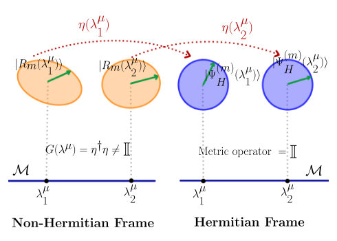
<figcaption class="paper-figure-caption"><b>Fig 1.</b> FIG. 1: Schematic illustration of the Dyson map connecting the non-Hermitian (deformed) and Hermitian (undeformed) Hilbert space bundles over parameter space M. At each point λµ, the right eigenstates |Rm(λµ)⟩span a fiber with a non-trivial metric operator G(λµ) = η†η ̸= I (left), while the mapped states |Ψ(m) H (λµ)⟩= η(λµ)|Rm(λµ)⟩form an orthonormal basis with a trivial metric operator I (right). The Dyson map η(λµ) provides a fiber-wise transformation that flattens the Hilbert space geometry while preserving the spectrum.</figcaption>
</figure>
<figure class="paper-figure-card">
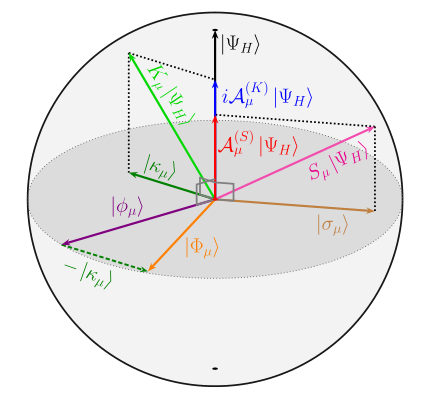
<figcaption class="paper-figure-caption"><b>Fig 2.</b> FIG. 2: Schematic illustration of the geometric decomposition of the Dyson connection (stretching component (Sµ) and rotation component (Kµ)) acting on a quantum state |ΨH⟩in Hilbert space. Sµ induces a norm-changing parallel component A(S) µ |ΨH⟩and an orthogonal deformation |σµ⟩, while Kµ generates a phase rotation and an orthogonal mixing |κµ⟩. The projected and dressed derivatives, |ϕµ⟩and |Φµ⟩, are also shown.</figcaption>
</figure>
<figure class="paper-figure-card">
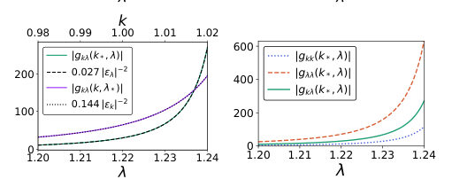
<figcaption class="paper-figure-caption"><b>Fig 3.</b> FIG. 3: Scaling behaviour and divergence hierarchy of geometric quantities in the SSH model (t0 = 1, t1 = 0.5) as the system approaches the EP at (k∗, λ∗) =  π</figcaption>
</figure>
<figure class="paper-figure-card">
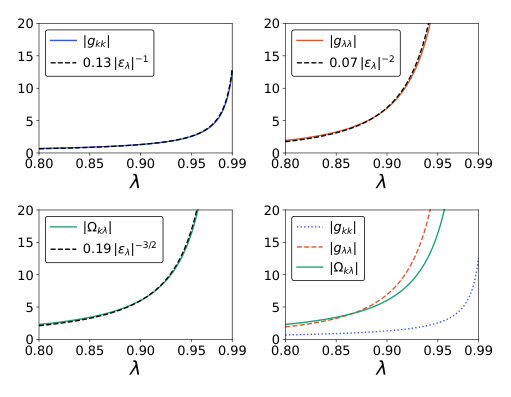
<figcaption class="paper-figure-caption"><b>Fig 4.</b> FIG. 4: Scaling behaviour and divergence hierarchy of geometric quantities in the HN model (R0 = 1) as the system approaches the EP at λ →1. The top-left, top-right, and bottom-left panels display the absolute values of the QMT components |gkk| and |gλλ|, and the non-Hermitian Berry curvature |Ωkλ|, respectively, as functions of the parameter λ. Solid coloured lines represent the exact analytical expressions. The black dashed lines correspond to the leading-order asymptotic fits with respect to ελ = λ −1. The numerical fits perfectly confirm the analytically predicted critical exponents: |gkk| ∼|ελ|−1, |gλλ| ∼|ελ|−2, and |Ωkλ| ∼|ελ|−3/2. The bottom-right panel superimposes all three...</figcaption>
</figure>
</div>

<p><strong>Summary.</strong> The paper establishes a gauge-covariant geometric framework for non-Hermitian quantum mechanics by using the Dyson map to relate the system to an equivalent Hermitian description. It defines key observables like the QMT and Berry curvature, showing that their structure reveals distinct scaling behaviors near exceptional points. This provides deep insight into how metric deformations drive novel topological features in open quantum systems.</p>
<p><strong>Why it may be interesting.</strong> This work provides powerful, rigorous mathematical tools to analyze non-Hermitian physics, which is crucial for understanding open quantum systems where gain/loss or dissipation are present (e.g., photonics, active matter).</p>
<details>
<summary>Detailed structure</summary>
<p><strong>Main problem.</strong> To develop a comprehensive, gauge-covariant geometric framework for analyzing non-Hermitian quantum systems.</p>
<p><strong>Main result.</strong> The geometry is characterized by the Quantum Metric Tensor (QMT) and Berry curvature, whose divergences near Exceptional Points follow distinct scaling laws ($\sim|\epsilon_\mu|^{-2}$ vs $\sim|\epsilon_\mu|^{-3/2}$).</p>
<p><strong>Method.</strong> The framework elevates the Dyson map to construct a connection, which is decomposed into stretching and rotation components to separate physical metric deformations from gauge redundancies.</p>
<p><strong>Model / system.</strong> The analysis applies to general non-Hermitian Hamiltonians in the quasi-Hermitian regime, with specific validation on models like the Su--Schrieffer--Heeger (SSH) and Hatano--Nelson (HN) chains.</p>
<p><strong>Key observables.</strong> Quantum Metric Tensor (QMT), Non-Hermitian Berry Curvature ($\Omega_{\mu
u}$), Dyson Connection components ($S_\mu, K_\mu$), and the complex non-Hermitian Berry phase.</p>
<p><strong>Important parameters / regimes.</strong> Parameters $\lambda_\mu$ defining the system; parameter displacement $\epsilon_\mu$ from an Exceptional Point (EP).</p>
<p><strong>Assumptions / limitations.</strong> The analysis focuses on the quasi-Hermitian regime where a positive-definite metric operator exists, and it systematically handles gauge freedom via covariant state constructions.</p>
<p><strong>Figures summary.</strong> Figures schematically illustrate the geometric decomposition of the Dyson connection into stretching ($S_\mu$) and rotation ($K_\mu$) components acting on the dressed derivative state $|\Psi_H
angle$.</p>
<p><strong>Paper structure.</strong> The paper systematically builds the framework by first introducing the Dyson map, decomposing its associated connection ($\Gamma_\mu$), defining gauge-invariant covariant states (like $|\Phi_\mu
angle$ and $|\sigma_\mu
angle$), constructing the QGT ($Q_{\mu
u}$), and finally analyzing the singular behavior of geometric quantities near EPs.</p>
</details>
<details>
<summary>Abstract</summary>
<p>We develop a comprehensive, gauge-covariant geometric framework for non-Hermitian quantum systems in the quasi-Hermitian regime, that is, the region of parameter space where the non-Hermitian Hamiltonian admits a real spectrum and a positive-definite metric operator. We build this framework by elevating the Dyson map to a central geometric object. This map is the transformation that converts a non-Hermitian Hamiltonian into an equivalent Hermitian one. From it we construct the Dyson connection and decompose it into Hermitian and anti-Hermitian parts, identified respectively as {\it stretching } and {\it rotation } components. This decomposition cleanly separates the genuine physical metric deformations from the unitary gauge redundancies. Working with manifestly gauge-covariant states, we then derive the complex non-Hermitian Berry phase and the quantum geometric tensor (QGT), and show that the non-Hermitian geometric curvature originates from the non-commutativity of the stretching components at the operator level. We further analyse the geometric singularities near an exceptional point (EP) and uncover a distinct hierarchy of divergences. For a general two-level non-Hermitian model, the quantum metric tensor (QMT) exhibits a leading-order divergence $\sim |ε_μ|^{-2}$, while the Berry curvature shows a weaker, subleading divergence $\sim |ε_μ|^{-3/2}$, with $ε_μ$ denoting the parameter displacement from the EP along an individual parameter axis $μ$. Finally, we examine physical realizations of this model, including the non-Hermitian Su--Schrieffer--Heeger (SSH) and Hatano--Nelson (HN) models, where exact analytical results confirm the predicted critical scaling laws and illustrate the metric-deformation-driven non-Hermitian geometries.</p>
</details>
<p><sub><a href="#top">↑ back to top</a></sub></p>

<p><a id="paper-2606.17036"></a></p>
<h3 id="grid-state-deformation-in-a-no-jump-non-hermitian-bosonic-dimer"><a href="http://arxiv.org/abs/2606.17036v1">Grid-state deformation in a no-jump non-Hermitian bosonic dimer</a></h3>
<p><strong>Authors:</strong> B. M. Rodriguez-Lara, H. Ghaemi-Dizicheh, S. Dehdashti, A. Hanke, A. Touhami, J. Nötzel<br>
<strong>Type:</strong> theory · <strong>Category:</strong> quantum information and computing · <strong>PDF:</strong> <a href="https://arxiv.org/pdf/2606.17036v1">https://arxiv.org/pdf/2606.17036v1</a><br>
<strong>Analysis basis:</strong> full PDF text, analyzed in chunks
<strong>Topic relevance:</strong> <code>driven-dissipative phase transition</code> <strong>3/5</strong> · <code>methods for driven-dissipative</code> <strong>3/5</strong> · <code>non-equilibrium dynamics</code> <strong>3/5</strong> · <code>Keldysh / 2PI / non-Gaussian methods</code> <strong>2/5</strong> · <code>correlated / nonlocal dissipation</code> <strong>2/5</strong> · <code>entanglement &amp; information structure</code> <strong>2/5</strong> · <code>non-equilibrium universality</code> <strong>2/5</strong> · <code>Kondo &amp; dissipative impurity</code> <strong>1/5</strong> · <code>analog quantum simulation</code> <strong>1/5</strong> · <code>measurement-induced transitions</code> <strong>1/5</strong> · <code>quantum measurements</code> <strong>1/5</strong></p>
<div class="figure-strip-hint">↔ Scroll figures horizontally</div>
<div class="paper-figures-scroll">
<figure class="paper-figure-card">

<figcaption class="paper-figure-caption"><b>Fig 1.</b> FIG. 1. Projection of the reference lattices onto the (q1, q2) plane for (a) two-mode qunaught</figcaption>
</figure>
<figure class="paper-figure-card">
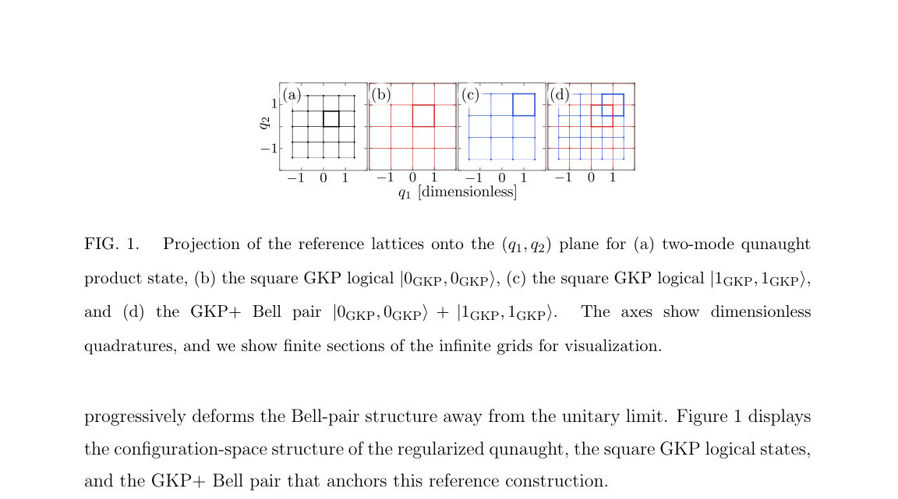
<figcaption class="paper-figure-caption"><b>Fig 2.</b> Figure 2 shows the projection of the primitive lattice onto the (q1, q2) plane. Figures 2(a)–</figcaption>
</figure>
<figure class="paper-figure-card">
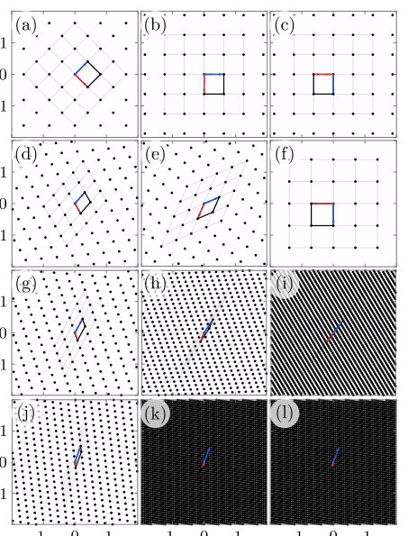
<figcaption class="paper-figure-caption"><b>Fig 3.</b> FIG. 2. Projection of the primitive lattice onto the (q1, q2) plane under the conditioned bosonic</figcaption>
</figure>
<figure class="paper-figure-card">
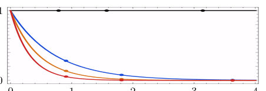
<figcaption class="paper-figure-caption"><b>Fig 4.</b> FIG. 3. Common-mode amplitude attenuation factor e−γ+t/2 for the same parameter choices</figcaption>
</figure>
<figure class="paper-figure-card">

<figcaption class="paper-figure-caption"><b>Fig 5.</b> Fig. 2. The full no-jump probability depends on the excitation-number distribution of the evolved</figcaption>
</figure>
</div>

<p><strong>Summary.</strong> The paper analyzes the evolution of bosonic grid states within a lossy dimer model using non-Hermitian quantum mechanics. It shows that dissipation causes a complex symplectic flow, geometrically deforming the encoded lattice structure away from its ideal unitary form. This provides crucial insights into how environmental coupling affects fault-tolerant quantum memory.</p>
<p><strong>Why it may be interesting.</strong> This work directly connects open quantum system dynamics (dissipation/loss) with fundamental concepts in continuous-variable quantum information encoding (GKP states), providing a detailed geometric understanding of how noise deforms logical qubits.</p>
<details>
<summary>Detailed structure</summary>
<p><strong>Main problem.</strong> The study investigates how ideal grid states evolve under non-Hermitian dynamics induced by loss in a bosonic dimer, focusing on the resulting lattice deformation.</p>
<p><strong>Main result.</strong> The no-jump evolution induces a complex symplectic flow that deforms the GKP state's lattice structure, exhibiting distinct regimes (elliptic, parabolic, hyperbolic) depending on decay rates.</p>
<p><strong>Method.</strong> The analysis uses an effective non-Hermitian Hamiltonian derived from a Lindblad master equation to track the time evolution of phase-space quadratures and the associated complex width matrix.</p>
<p><strong>Model / system.</strong> The system is a bosonic dimer modeled by a Hamiltonian coupled with differential zero-temperature single-excitation loss rates, leading to an effective non-Hermitian dynamics. The analysis tracks the deformation of grid states (like GKP states) in phase space.</p>
<p><strong>Key observables.</strong> Primitive lattice vectors ($\mathbf{u}_1(t), \mathbf{u}_2(t)$), complex width matrix $\Gamma_\sigma(t)$, and the no-jump probability $P_0(t)$.</p>
<p><strong>Important parameters / regimes.</strong> Differential decay rates ($\gamma_+, \gamma_-$), coherent hopping strength ($g$), and detuning ($\Delta$). The regimes are defined by parameter comparisons (e.g., $\gamma_{2-} < 4g^2$ for elliptic).</p>
<p><strong>Assumptions / limitations.</strong> The analysis focuses on the no-jump branch of the evolution, treating the system as a bosonic dimer with differential decay and using Gaussian regularization for the origin seed.</p>
<p><strong>Figures summary.</strong> Figures illustrate the configuration-space structure of GKP states in different regimes (lossless vs. lossy), project the lattice onto $(q_1, q_2)$ planes showing geometric deformation, and plot the common-mode amplitude attenuation factor.</p>
<p><strong>Paper structure.</strong> The paper first derives the effective non-Hermitian dynamics from the Lindblad equation. It then analyzes the evolution of the grid state by separating it into a lattice deformation sector (governed by complex symplectic flow) and an origin seed sector (analyzed via the width matrix). Finally, it compares the results to the lossless limit.</p>
</details>
<details>
<summary>Abstract</summary>
<p>We study the no-jump evolution of ideal grid states in a lossy bosonic dimer with differential decay. The effective non-Hermitian quadratic dynamics induces a complex symplectic flow in phase space that deforms both the primitive lattice vectors and the origin seed. The average decay rate controls common attenuation, while coherent hopping and differential decay control the reduced dimer deformation. The reduced sector contains elliptic, parabolic, and hyperbolic regimes with imaginary spectra, an exceptional point, and real spectra, producing oscillatory, linear, and exponential lattice deformations. Although projected lattice areas can change, the deformation comes from a determinant-one complex symplectic flow on the full four-dimensional phase space. For a Gaussian regularization of the origin seed, we derive the associated complex width matrix and identify the positivity conditions that preserve Gaussian form. For an initial two-mode qunaught product state, the lossless limit recovers the standard beam-splitter generation of a square GKP$+$ Bell pair, while the no-jump dynamics produces its non-Hermitian deformation with a postselection cost set by the no-jump probability.</p>
</details>
<p><sub><a href="#top">↑ back to top</a></sub></p>

<p><a id="paper-2606.15101"></a></p>
<h3 id="optimizing-wigner-negativity-in-scattering-processes-using-energetic-cost-functions"><a href="http://arxiv.org/abs/2606.15101v1">Optimizing Wigner Negativity in Scattering Processes Using Energetic Cost Functions</a></h3>
<p><strong>Authors:</strong> Kian Hwee Lim, Kiarn T. Laverick, Sahil Sardar Jafar, Samyak P. Prasad, Maria Maffei, Alexia Auffèves<br>
<strong>Type:</strong> theory · <strong>Category:</strong> other · <strong>PDF:</strong> <a href="https://arxiv.org/pdf/2606.15101v1">https://arxiv.org/pdf/2606.15101v1</a><br>
<strong>Analysis basis:</strong> full PDF text, analyzed in chunks
<strong>Topic relevance:</strong> <code>Keldysh / 2PI / non-Gaussian methods</code> <strong>3/5</strong> · <code>driven-dissipative phase transition</code> <strong>3/5</strong> · <code>methods for driven-dissipative</code> <strong>3/5</strong> · <code>analog quantum simulation</code> <strong>2/5</strong> · <code>correlated / nonlocal dissipation</code> <strong>2/5</strong> · <code>entanglement &amp; information structure</code> <strong>2/5</strong> · <code>non-equilibrium dynamics</code> <strong>2/5</strong> · <code>Tavis-Cummings &amp; cavity-many-emitter</code> <strong>1/5</strong> · <code>correlated cavity matter</code> <strong>1/5</strong> · <code>interference shaping light</code> <strong>1/5</strong> · <code>non-equilibrium universality</code> <strong>1/5</strong></p>
<div class="figure-strip-hint">↔ Scroll figures horizontally</div>
<div class="paper-figures-scroll">
<figure class="paper-figure-card">
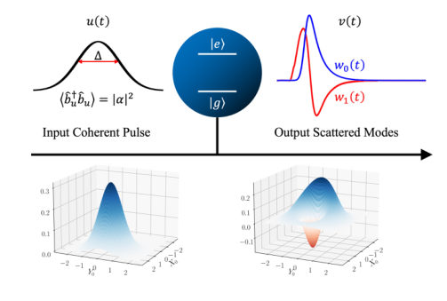
<figcaption class="paper-figure-caption"><b>Fig 1.</b> FIG. 1. An input Gaussian (of width ∆) coherent pulse with ⟨ˆb† ubu⟩= |α2| photons scattering off the TLA with decay rate γ, producing multi-modal output light. A carefully designed output filter function v(t) can select one of these output scat- tering modes (see main text) which captures a large amount of the WN that is produced in this scattering process from a state with no negativity, shown by the Wigner functions underneath the input and output, respectively.</figcaption>
</figure>
<figure class="paper-figure-card">
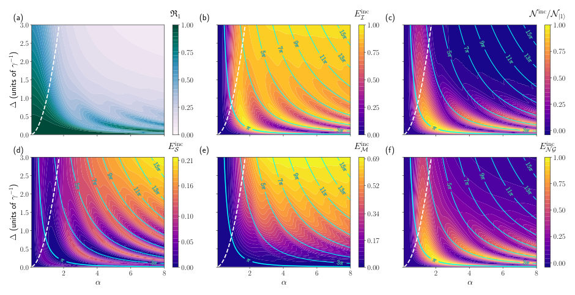
<figcaption class="paper-figure-caption"><b>Fig 2.</b> FIG. 2. (a) The rank-one-score of KI(t, t′) (see Eq. (2)). (b-f) Numerical results when we pick the temporal mode function winc(t) which maximizes the incoherent energy for each (α, ∆). (b) Incoherent energy Einc I and (c) WN of the field in the most incoherent mode winc. (d-f) Decomposition of Einc I according to Eq. (9), giving Einc S , Einc M , Einc N G. In all figures, the cyan contour lines represent (α, ∆) values such that the input coherent state executes a finite duration (2k + 1)π-pulse on the TLA, where k ∈Z+. The white dashed-line separates the spontaneous (left of the line) from the stimulated (right of the line) emission regimes.</figcaption>
</figure>
<figure class="paper-figure-card">
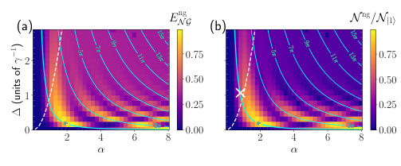
<figcaption class="paper-figure-caption"><b>Fig 3.</b> FIG. 3. (a) Eng N G values obtained for each input (α, ∆). (b) The corresponding WN values N ng. Both (a) and (b) were plotted on a coarser grid as compared to Fig. 2. As can be seen, higher values of Eng N G correspond to higher values of N ng. Furthermore, both (a) and (b) agree with Fig. 2 in the low (α, ∆) regime and have higher values than Fig. 2 in the high (α, ∆) regime. The point of max efficiency (see Eq. (3)) using the temporal mode function wng(t) is starred here and it corresponds to (α, ∆) = (0.774, 1.070γ−1). The white and cyan contours are as in Fig. 2.</figcaption>
</figure>
<figure class="paper-figure-card">
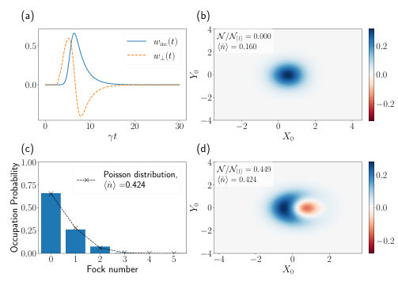
<figcaption class="paper-figure-caption"><b>Fig 4.</b> FIG. 4. (a) Shapes of winc(t) and w⊥(t). (b), (d) Wigner functions of the output field in temporal modes ˆbw⊥and ˆbwinc respectively. (c) Fock occupation probabilities in mode ˆbwinc Not the total input energy here is |α|2 = 0.599.</figcaption>
</figure>
<figure class="paper-figure-card">
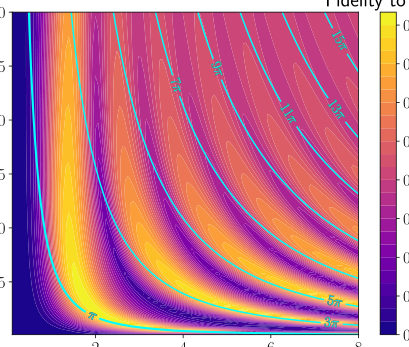
<figcaption class="paper-figure-caption"><b>Fig 5.</b> FIG. 5. Here, we pick vopt(t) to be the temporal mode winc(t) which maximizes the incoherent energy and plot the fidelity of the field state to a displaced single photon state in the temporal mode ˆbwinc . The cyan contour lines represent (α, ∆) values such that the input coherent state executes a finite duration (2k + 1)π-pulse, where k ∈Z+ on the TLA. The origin of the displacement is explained in the SM [40] (See S.4).</figcaption>
</figure>
</div>

<p><strong>Summary.</strong> This paper develops a method using energetic cost functions to optimize the generation of Wigner Negativity, a key signature of non-Gaussian bosonic states. The study models coherent pulse scattering from a two-level atom coupled to a reservoir. It finds that maximal efficiency for generating these non-classical resources occurs under specific conditions involving single-photon input and spectral matching.</p>
<p><strong>Why it may be interesting.</strong> This work provides a powerful theoretical tool—energetic cost functions—to quantify non-Gaussian resources like Wigner Negativity in complex open quantum systems (TLA coupled to reservoirs), which is highly relevant for quantum light sources and quantum information processing.</p>
<details>
<summary>Detailed structure</summary>
<p><strong>Main problem.</strong> The research aims to optimize the generation of Wigner Negativity (WN) signatures, which characterize non-Gaussian bosonic states, during quantum scattering processes.</p>
<p><strong>Main result.</strong> Maximally efficient WN generation is achieved when the input pulse contains an average of one photon and is spectrally mode-matched with the two-level atom (TLA).</p>
<p><strong>Method.</strong> The authors introduce energetic cost functions to bypass direct, complex evaluation of Wigner functions in multimode scattering settings.</p>
<p><strong>Model / system.</strong> The system models a coherent pulse scattering off a Two-Level Atom (TLA) coupled to a one-dimensional bosonic reservoir. The dynamics are governed by an energy-preserving Hamiltonian and analyzed using quantum optical kernels.</p>
<p><strong>Key observables.</strong> Wigner Negativity ($\mathcal{N}_W$), Incoherent Energy ($E_{	ext{inc}}$), Squeezing Energy ($E_S$), Mixedness Energy ($E_M$), and Non-Gaussian Energy ($E_{NG}$).</p>
<p><strong>Important parameters / regimes.</strong> The optimal regime is found near the condition of one average input photon ($\langle\alpha
angle^2=1$) and spectral mode matching.</p>
<p><strong>Assumptions / limitations.</strong> Approximations include using energetic cost functions to correlate with WN, and employing finite rank approximations for kernel calculations.</p>
<p><strong>Figures summary.</strong> Figures illustrate the correlation between various energy components ($E_{	ext{inc}}$ vs $\mathcal{N}_{	ext{inc}}$, $E_{NG}$ vs $\mathcal{N}_{ng}$) across different input pulse parameters $(\alpha, \Delta)$, identifying the optimal operating point.</p>
<p><strong>Paper structure.</strong> The paper establishes the physical model and Hamiltonian, develops the energetic cost function approach to circumvent Wigner function complexity, analyzes the correlation between energy components and WN, and concludes by pinpointing the optimal operational regime for high-efficiency generation.</p>
</details>
<details>
<summary>Abstract</summary>
<p>Wigner negativities (WNs) are key signatures of non-Gaussian bosonic states and essential resources for quantum technologies. We study their generation in the scattering of coherent pulses by a two-level atom coupled to a one-dimensional reservoir, a unitary and energy-preserving platform. Optimization in this multimode setting is hindered by the complexity of evaluating Wigner functions. We overcome this challenge by introducing energetic cost functions that identify output modes most likely to host large negativities. First using incoherent energy and then isolating a genuinely non-Gaussian contribution, we demonstrate a strong correlation between these quantities and WNs. This correlation extends beyond short, intense pulses to encompass pulses of finite energy, where photons are scattered while the two-level atom is driven. Focusing on the energy-efficiency of the process, we show that maximally efficient generation takes place for one input photon, on average, spectrally mode-matched with the atom.</p>
</details>
<p><sub><a href="#top">↑ back to top</a></sub></p>

<p><a id="paper-2606.16918"></a></p>
<h3 id="controlled-quantum-metrology-with-anisotropic-heisenberg-spin-interactions-under-intrinsic-decoherence"><a href="http://arxiv.org/abs/2606.16918v1">Controlled Quantum Metrology with Anisotropic Heisenberg Spin Interactions under Intrinsic Decoherence</a></h3>
<p><strong>Authors:</strong> S. K. Singh, Jia-Xin Peng, Y-J Zhu, Mohammad Khalid<br>
<strong>Type:</strong> theory · <strong>Category:</strong> quantum information and computing · <strong>PDF:</strong> <a href="https://arxiv.org/pdf/2606.16918v1">https://arxiv.org/pdf/2606.16918v1</a><br>
<strong>Analysis basis:</strong> full PDF text, analyzed in chunks
<strong>Topic relevance:</strong> <code>analog quantum simulation</code> <strong>3/5</strong> · <code>entanglement &amp; information structure</code> <strong>3/5</strong> · <code>exotic spin models in light-matter</code> <strong>3/5</strong> · <code>correlated / nonlocal dissipation</code> <strong>2/5</strong> · <code>driven-dissipative phase transition</code> <strong>2/5</strong> · <code>methods for driven-dissipative</code> <strong>2/5</strong> · <code>non-equilibrium dynamics</code> <strong>2/5</strong> · <code>Keldysh / 2PI / non-Gaussian methods</code> <strong>1/5</strong> · <code>non-equilibrium universality</code> <strong>1/5</strong> · <code>spintronics-quantum-optics interface</code> <strong>1/5</strong></p>
<div class="figure-strip-hint">↔ Scroll figures horizontally</div>
<div class="paper-figures-scroll">
<figure class="paper-figure-card">
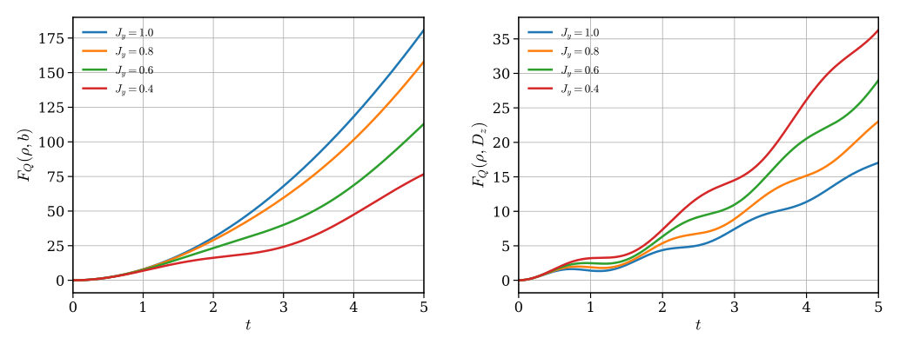
<figcaption class="paper-figure-caption"><b>Fig 1.</b> FIG. 1: Time evolution of FQ(ρ, b) and FQ(ρ, Dz) for the estimation of (a) the uniform magnetic field b and (b) the DM interaction strength Dz, respectively, for different values of Jy. The remaining parameters are fixed at Jx = 1.0, Jz = 0.2, Dz = 0.5, b = 0.3, θ = π/4, and γ = 0.02.</figcaption>
</figure>
<figure class="paper-figure-card">
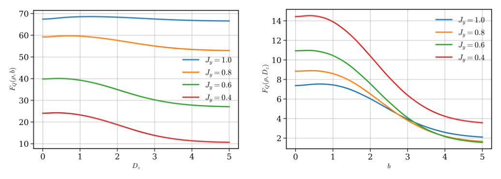
<figcaption class="paper-figure-caption"><b>Fig 2.</b> FIG. 2: Dependence of (a) FQ(ρ, b) on the DM interaction strength Dz and (b) FQ(ρ, Dz) on the uniform magnetic field b for different values of Jy. All other parameters are the same as used in Fig. 1.</figcaption>
</figure>
<figure class="paper-figure-card">
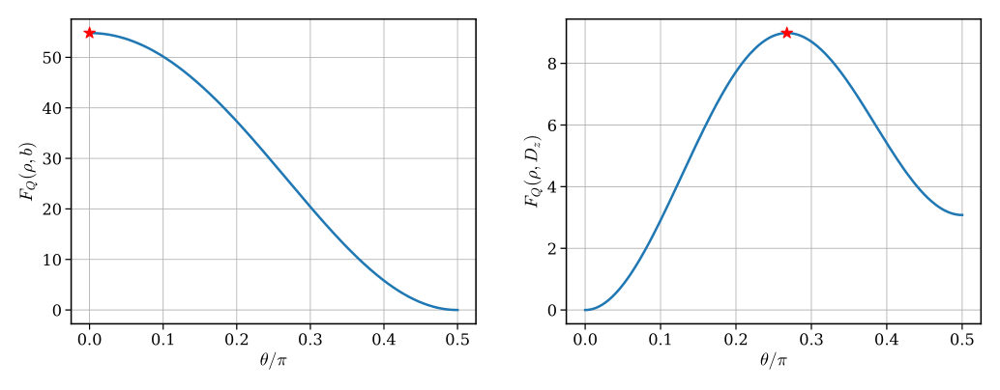
<figcaption class="paper-figure-caption"><b>Fig 3.</b> FIG. 3: Dependence of (a) FQ(ρ, b) and (b) FQ(ρ, Dz) on the initial-state parameter θ. All other parameters are the same as those used in Fig. 1, with t = 3.0.</figcaption>
</figure>
<figure class="paper-figure-card">
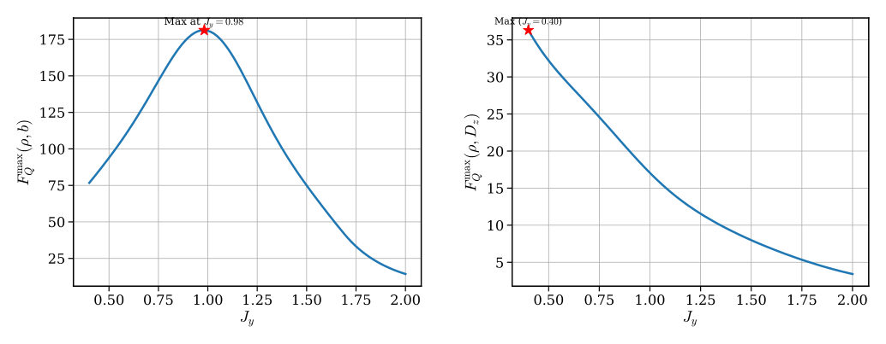
<figcaption class="paper-figure-caption"><b>Fig 4.</b> FIG. 4: Maximum values of (a) F max Q (ρ, b) and (b) F max Q (ρ, Dz) as functions of the exchange coupling parameter Jy. All other parameters are same like used in Fig. 1, with the maximum taken over the time interval 0 ≤t ≤5.</figcaption>
</figure>
<figure class="paper-figure-card">
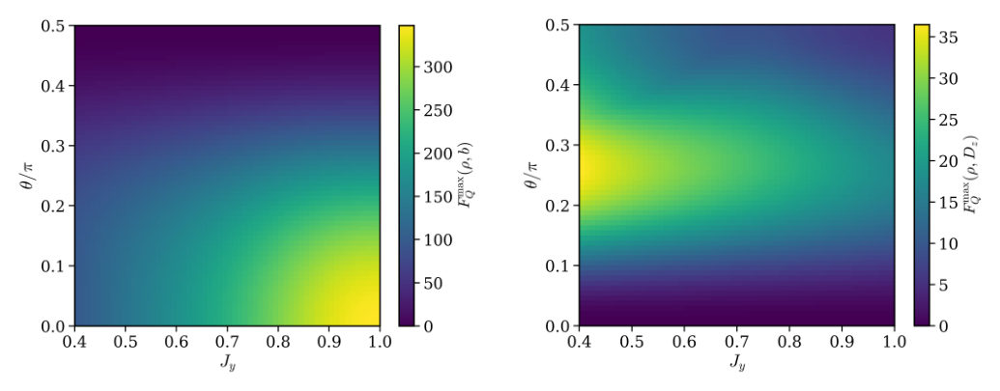
<figcaption class="paper-figure-caption"><b>Fig 5.</b> FIG. 5: Two-dimensional density plots of (a) F max Q (ρ, b) and (b) F max Q (ρ, Dz) in the (Jy, θ) parameter plane. The remaining parameters are the same as those used in Fig. 1, with the maximum taken over the time interval 0 ≤t ≤5.</figcaption>
</figure>
</div>

<p><strong>Summary.</strong> The paper theoretically analyzes quantum parameter estimation in a two-qubit spin system exhibiting anisotropic Heisenberg interactions and DM coupling, all while accounting for intrinsic decoherence. By maximizing the Quantum Fisher Information, the authors determine that optimal sensing conditions are highly dependent on whether one is measuring the magnetic field or the DM interaction strength. The findings underscore the necessity of tailoring quantum resources to the specific metrology task.</p>
<p><strong>Why it may be interesting.</strong> This work directly addresses quantum sensing limits in realistic open quantum systems (with decoherence), which is a major focus area bridging AMO physics and quantum information theory.</p>
<details>
<summary>Detailed structure</summary>
<p><strong>Main problem.</strong> The study investigates how precisely physical parameters (like magnetic field or DM interaction strength) can be estimated using quantum systems.</p>
<p><strong>Main result.</strong> Optimal estimation performance requires careful tuning of the initial entangled state and exchange coupling, with no single set of parameters being optimal for both sensing tasks simultaneously.</p>
<p><strong>Method.</strong> The Quantum Fisher Information (QFI) is used as the figure of merit to quantify the ultimate precision limit on parameter estimation.</p>
<p><strong>Model / system.</strong> The system is a two-qubit anisotropic Heisenberg spin model incorporating a Dzyaloshinskii-Moriya interaction and subjected to intrinsic decoherence modeled by the Milburn master equation.</p>
<p><strong>Key observables.</strong> Quantum Fisher Information (QFI), concurrence, quantum coherence ($l_1$-norm), and von Neumann entropy.</p>
<p><strong>Important parameters / regimes.</strong> Anisotropic exchange coupling ($J_y$), probe-state mixing angle ($    heta$), intrinsic decoherence rate ($\gamma$), magnetic field ($b$), and DM interaction strength ($D_z$).</p>
<p><strong>Assumptions / limitations.</strong> The analysis relies on the Milburn model for decoherence and uses numerical approximations (finite differences) to calculate derivatives.</p>
<p><strong>Figures summary.</strong> Figures illustrate how QFI depends on $    heta$ and $J_y$ for different parameters, show the monotonic decay of QFI with decoherence rate ($\gamma$), and compare QFI trends against entanglement/coherence measures.</p>
<p><strong>Paper structure.</strong> The paper establishes the Hamiltonian and decoherence model, calculates the time-evolved density matrix, derives the QFI formula, and then systematically analyzes how varying initial state parameters ($ heta$) and coupling constants ($J_y$) affect the achievable precision for $b$ vs. $D_z$.</p>
</details>
<details>
<summary>Abstract</summary>
<p>We theoretically investigate quantum parameter estimation in a two-qubit anisotropic Heisenberg spin system with Dzyaloshinskii-Moriya (DM) interaction in the presence of intrinsic decoherence described by the Milburn model. Using the Quantum Fisher Information (QFI), we study the estimation of both the uniform magnetic field and the DM interaction strength. Analytical expressions for the time-evolved density matrix are obtained and used to explore the effects of exchange anisotropy, intrinsic decoherence, and probe-state preparation on the achievable estimation precision. Our results show that suitable tuning of the anisotropic exchange coupling and the initial entangled state can considerably enhance the estimation performance, with different optimal parameter regimes emerging for magnetic-field and DM-interaction sensing. To better understand the role of quantum resources in metrology, we also examine the behaviour of concurrence, quantum coherence, and von Neumann entropy. Overall, our findings demonstrate that anisotropic Heisenberg spin systems with DM interaction provide a promising and flexible platform for high-precision quantum metrology even in the presence of intrinsic decoherence.</p>
</details>
<p><sub><a href="#top">↑ back to top</a></sub></p>

<p><a id="paper-2606.16785"></a></p>
<h3 id="extracting-boundary-conformal-data-from-periodic-non-hermitian-critical-chains"><a href="http://arxiv.org/abs/2606.16785v1">Extracting Boundary Conformal Data from Periodic Non-Hermitian Critical Chains</a></h3>
<p><strong>Authors:</strong> Yifan Liu, Haruki Shimizu, Dongchang Liu, Kohei Kawabata<br>
<strong>Type:</strong> theory · <strong>Category:</strong> statistical mechanics · <strong>PDF:</strong> <a href="https://arxiv.org/pdf/2606.16785v1">https://arxiv.org/pdf/2606.16785v1</a><br>
<strong>Analysis basis:</strong> full PDF text, analyzed in chunks
<strong>Topic relevance:</strong> <code>driven-dissipative phase transition</code> <strong>3/5</strong> · <code>methods for driven-dissipative</code> <strong>3/5</strong> · <code>non-equilibrium universality</code> <strong>3/5</strong> · <code>Kondo &amp; dissipative impurity</code> <strong>2/5</strong> · <code>non-equilibrium dynamics</code> <strong>2/5</strong> · <code>Frenkel-Kontorova</code> <strong>1/5</strong> · <code>Keldysh / 2PI / non-Gaussian methods</code> <strong>1/5</strong> · <code>analog quantum simulation</code> <strong>1/5</strong> · <code>correlated / nonlocal dissipation</code> <strong>1/5</strong> · <code>entanglement &amp; information structure</code> <strong>1/5</strong></p>
<div class="figure-strip-hint">↔ Scroll figures horizontally</div>
<div class="paper-figures-scroll">
<figure class="paper-figure-card">
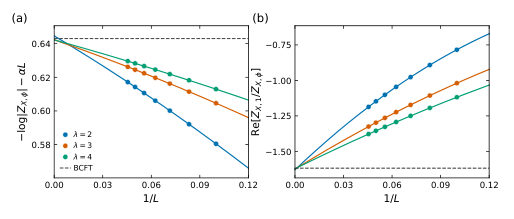
<figcaption class="paper-figure-caption"><b>Fig 1.</b> FIG. 1. Yang–Lee boundary coefficients extracted from pro- jected overlaps using the η-invariant preparation |X⟩. The dashed lines are the BCFT predictions. The imaginary parts of both projected amplitudes are negligible. (a) Extraction of G1 = G1,ϕ = g2 1 from the η-invariant X preparation. (b) The signed ratio RX,1 = ZX,1/ZX,ϕ cancels the extensive contri- bution and approaches −(1 + √</figcaption>
</figure>
<figure class="paper-figure-card">
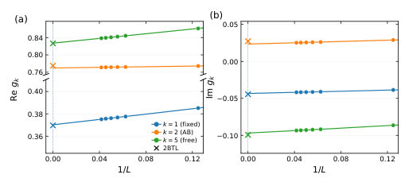
<figcaption class="paper-figure-caption"><b>Fig 2.</b> FIG. 2. Finite-size extraction of complex Potts projected coefficients for representative preparations (k = 1, 2, 5). We plot gk,eff(L) ≡exp[(log Zk,1(L) + αkL)/2] against 1/L. The extrapolated intercept gives gnum k . The crosses at 1/L = 0 denote the corresponding boundary loop model values.</figcaption>
</figure>
</div>

<p><strong>Summary.</strong> The paper presents a novel spectroscopic technique to extract Boundary Conformal Field Theory (BCFT) data directly from periodic, non-Hermitian critical chains. By analyzing projected partition functions and their ratios, the authors successfully recover universal boundary quantities for models like the Yang–Lee CFT and the Potts chain without needing explicit open boundary engineering. This establishes a general theoretical route into non-unitary boundary criticality using only bulk information.</p>
<p><strong>Why it may be interesting.</strong> This work provides a powerful, purely bulk-based theoretical tool for accessing universal boundary physics in complex, non-Hermitian quantum systems, which is highly relevant for understanding open or engineered quantum boundaries.</p>
<details>
<summary>Detailed structure</summary>
<p><strong>Main problem.</strong> The primary goal is developing a method to extract universal Boundary Conformal Field Theory (BCFT) data from non-Hermitian bulk-critical quantum chains.</p>
<p><strong>Main result.</strong> The authors successfully demonstrated the extraction of boundary data for both $\mathcal{PT}$-symmetric Ising models and the five-state Potts chain, confirming relations like Kramers–Wannier duality using only knowledge of the periodic bulk system.</p>
<p><strong>Method.</strong> They introduce 'projected-partition-function spectroscopy' by analyzing the scaling limit of projected amplitudes $Z_{\Phi,i}(L)$ to extract boundary coefficients while circumventing engineered open boundaries.</p>
<p><strong>Model / system.</strong> The work applies to non-Hermitian quantum many-body systems exhibiting critical phenomena, specifically tested on a $\mathcal{PT}$-symmetric Ising realization of the Yang–Lee CFT and the five-state Potts chain.</p>
<p><strong>Key observables.</strong> Universal boundary-state coefficients ($G_a(\Phi),i$), boundary entropy (Affleck–Ludwig $g$-factor), and ratios of projected partition functions, such as $  ext{R}_{\Phi,1}(L)$.</p>
<p><strong>Important parameters / regimes.</strong> The analysis focuses on the thermodynamic limit ($L 	o \infty$) and involves analyzing finite-size scaling corrections based on irrelevant operators.</p>
<p><strong>Assumptions / limitations.</strong> The method assumes that a short-range preparation state can microscopically represent a conformal boundary condition, allowing nonuniversal terms to be canceled via ratios or scaling analysis.</p>
<p><strong>Figures summary.</strong> Figures illustrate the finite-size extraction of Yang–Lee boundary coefficients and complex Potts projected coefficients ($g_k$) versus $1/L$, comparing numerical results against established BCFT predictions.</p>
<p><strong>Paper structure.</strong> The paper develops from defining the projected amplitude, establishing its scaling behavior using ratios to eliminate nonuniversal factors, and then applying this robust framework sequentially to two distinct physical realizations (Yang-Lee CFT and Potts chain) to validate its applicability across different boundary regimes.</p>
</details>
<details>
<summary>Abstract</summary>
<p>Boundary conformal field theory (BCFT) contains universal data that are usually accessed microscopically by imposing spatial boundaries on the lattice. Here, we introduce a periodic-chain projected-partition-function spectroscopy that extracts universal boundary quantities directly from non-Hermitian bulk-critical quantum chains, avoiding the need to engineer microscopic open boundaries and circumventing subtle boundary effects in non-Hermitian systems. Using a short-range-entangled boundary preparation and its infrared-compatible left dual, we obtain the Affleck-Ludwig boundary entropy in non-Hermitian systems. We demonstrate this construction for two representative non-Hermitian infrared structures. For a $\mathcal{PT}$-symmetric Ising realization of the real nonunitary Yang-Lee CFT, we extract the minimal-boundary projected coefficient and recover a nontrivial negative excited-to-ground ratio. For the genuinely complex fixed points of the non-Hermitian five-state Potts chain, we resolve intrinsically complex boundary coefficients and reproduce the exact relation required by the Kramers-Wannier duality. Our results establish a route to nonunitary BCFT universal data via only knowledge of the bulk critical system, opening a window into non-Hermitian boundary criticality.</p>
</details>
<p><sub><a href="#top">↑ back to top</a></sub></p>

<p><a id="paper-2606.16634"></a></p>
<h3 id="ultrastrongly-coupled-open-systems-and-fine-grained-time"><a href="http://arxiv.org/abs/2606.16634v1">Ultrastrongly coupled open systems and fine grained time</a></h3>
<p><strong>Authors:</strong> Stefano Marcantoni, Marco Merkli<br>
<strong>Type:</strong> theory · <strong>Category:</strong> other · <strong>PDF:</strong> <a href="https://arxiv.org/pdf/2606.16634v1">https://arxiv.org/pdf/2606.16634v1</a><br>
<strong>Analysis basis:</strong> full PDF text, analyzed in chunks
<strong>Topic relevance:</strong> <code>methods for driven-dissipative</code> <strong>3/5</strong> · <code>non-equilibrium dynamics</code> <strong>3/5</strong> · <code>Keldysh / 2PI / non-Gaussian methods</code> <strong>2/5</strong> · <code>correlated / nonlocal dissipation</code> <strong>2/5</strong> · <code>driven-dissipative phase transition</code> <strong>2/5</strong> · <code>non-equilibrium universality</code> <strong>2/5</strong> · <code>Kondo &amp; dissipative impurity</code> <strong>1/5</strong> · <code>analog quantum simulation</code> <strong>1/5</strong> · <code>entanglement &amp; information structure</code> <strong>1/5</strong> · <code>scars &amp; prethermalization</code> <strong>1/5</strong></p>
<div class="figure-strip-hint">↔ Scroll figures horizontally</div>
<div class="paper-figures-scroll">
<figure class="paper-figure-card">
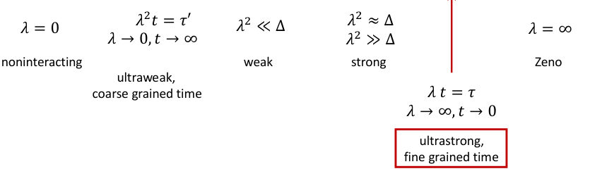
<figcaption class="paper-figure-caption"><b>Fig 1.</b> Figure 1: Different coupling regimes: From noninteracting to Zeno. Here, λ is the coupling parameter and ∆represents a typical system Bohr frequency, a hopping matrix element in the system Hamiltonian, or similar. The ultraweak and ultrastrong coupling regimes are dynamical regimes involving rescaled times. Here we introduce the fine grained time τ for the ultrastrong coupling regime and we derive the system dynamics as a function of τ. We show that the instantaneous decoherence process known to happen in the Zeno limit (‘λ = ∞’) is resolved as a continuous dynamical process in the fine grained time.</figcaption>
</figure>
</div>

<p><strong>Summary.</strong> This paper analyzes the time evolution of an open quantum system under ultrastrong coupling by introducing a fine-grained time scale. It resolves the predicted instantaneous decoherence into a continuous process, demonstrating that the resulting dynamics are Markovian but require specialized mathematical tools beyond standard weak-coupling theories.</p>
<p><strong>Why it may be interesting.</strong> This work tackles a fundamental issue in open quantum systems: how to correctly describe dynamics when coupling strengths are so large that standard weak-coupling approximations fail, providing rigorous tools for non-Markovian/ultrastrong regimes.</p>
<details>
<summary>Detailed structure</summary>
<p><strong>Main problem.</strong> The study investigates quantum dynamics of a system coupled to a reservoir under ultrastrong coupling, aiming to resolve instantaneous decoherence predicted in the infinite coupling limit.</p>
<p><strong>Main result.</strong> The evolution is shown to be continuous in a fine-grained time scale ($    au = \lambda t$), and the resulting dynamics are Markovian but not necessarily described by a standard semigroup structure.</p>
<p><strong>Method.</strong> The authors employ rigorous mathematical derivations using a fine-grained scaling regime, analyzing the system's reduced density matrix evolution via specialized propagators and checking for CP-divisibility criteria.</p>
<p><strong>Model / system.</strong> The model is an open quantum system consisting of a $d$-level system ($S$) coupled to a bosonic reservoir ($R$). The interaction strength ($\lambda$) is taken to be very large (ultrastrong coupling).</p>
<p><strong>Key observables.</strong> Reduced density matrix $
ho_S(   au)$, decoherence function, and the structure of the time evolution map $\Lambda(	au)$.</p>
<p><strong>Important parameters / regimes.</strong> Coupling constant ($\lambda$), fine-grained time scale ($ au = \lambda t$), and system/reservoir spectral properties.</p>
<p><strong>Assumptions / limitations.</strong> The analysis relies on introducing a specific fine-grained scaling regime to handle the strong coupling limit, and certain regularity conditions (Assumption R) are required for limiting procedures.</p>
<p><strong>Figures summary.</strong> Figure 1 illustrates various coupling regimes ($\lambda$ vs $\Delta$), emphasizing the necessity of the fine-grained time scale $ au$ for resolving instantaneous decoherence in the ultrastrong regime.</p>
<p><strong>Paper structure.</strong> The paper progresses by first defining the physical problem across different coupling limits, then deriving the dynamics in the fine-grained time limit ($ au = \lambda t$), and finally analyzing the mathematical properties of this evolution map concerning quantum Markovianity (CP-divisibility).</p>
</details>
<details>
<summary>Abstract</summary>
<p>We study the dynamics of a d-level quantum system coupled to a bosonic reservoir when the coupling constant is large. It is known that in the limit of infinite coupling strength, the system undergoes an instantaneous nonselective measurement, resulting in the immediate decoherence in the measurement basis, followed by a unitary Zeno dynamics. Here we resolve this dynamical process by introducing a fine grained scaling regime of short times proportional to the inverse coupling. We provide a rigorous derivation of the open system dynamics in this regime of ultrastrong coupling and demonstrate how decoherence unfolds continuously in the new time scale. We show that Markovian dynamics which are not given by semigroups arise naturally, in contrast to what happens in the weak coupling theory.</p>
</details>
<p><sub><a href="#top">↑ back to top</a></sub></p>

<p><a id="paper-2606.15538"></a></p>
<h3 id="generalized-symmetries-invariant-solutions-and-conservation-laws-in-the-jaynes-cummings-model"><a href="http://arxiv.org/abs/2606.15538v1">Generalized symmetries, invariant solutions and conservation laws in the Jaynes-Cummings model</a></h3>
<p><strong>Authors:</strong> Luis M. Piñuelas, Pablo C. López Vázquez, Alexander Yakhno<br>
<strong>Type:</strong> theory · <strong>Category:</strong> other · <strong>PDF:</strong> <a href="https://arxiv.org/pdf/2606.15538v1">https://arxiv.org/pdf/2606.15538v1</a><br>
<strong>Analysis basis:</strong> full PDF text, analyzed in chunks
<strong>Topic relevance:</strong> <code>Tavis-Cummings &amp; cavity-many-emitter</code> <strong>3/5</strong> · <code>correlated cavity matter</code> <strong>3/5</strong> · <code>methods for driven-dissipative</code> <strong>2/5</strong> · <code>non-equilibrium dynamics</code> <strong>2/5</strong> · <code>Keldysh / 2PI / non-Gaussian methods</code> <strong>1/5</strong> · <code>analog quantum simulation</code> <strong>1/5</strong> · <code>correlated / nonlocal dissipation</code> <strong>1/5</strong> · <code>driven-dissipative phase transition</code> <strong>1/5</strong> · <code>entanglement &amp; information structure</code> <strong>1/5</strong> · <code>non-equilibrium universality</code> <strong>1/5</strong></p>
<div class="figure-strip-hint">↔ Scroll figures horizontally</div>
<div class="paper-figures-scroll">
<figure class="paper-figure-card">
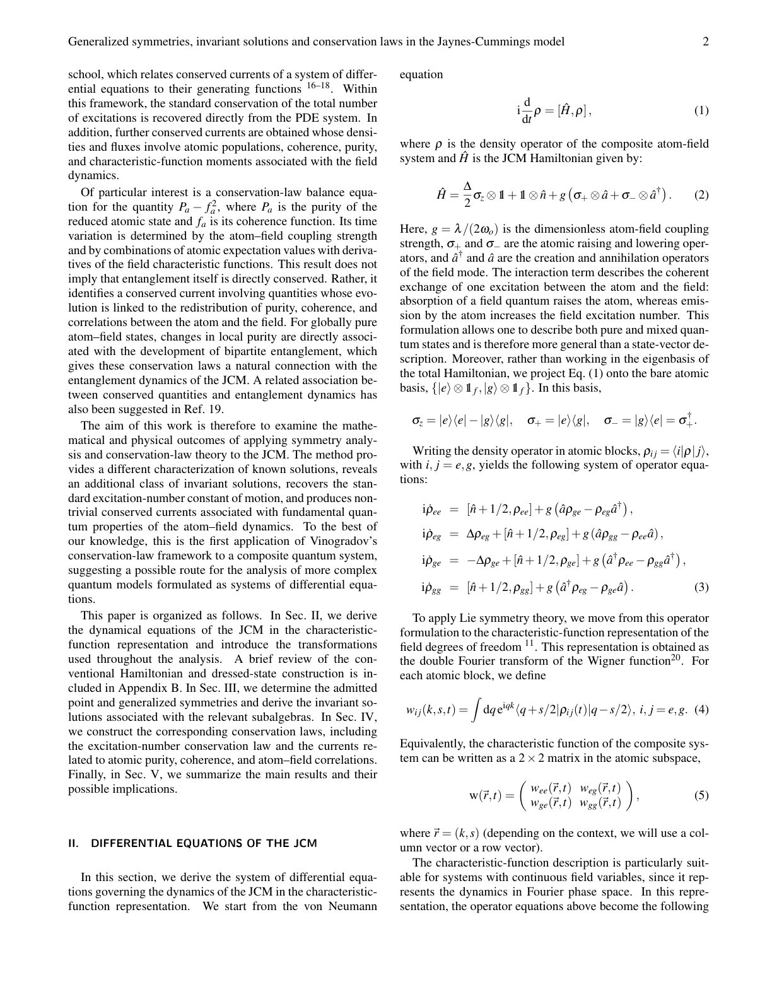
<figcaption class="paper-figure-caption"><b>Fig 1.</b> Low-resolution page preview, page 2</figcaption>
</figure>
<figure class="paper-figure-card">
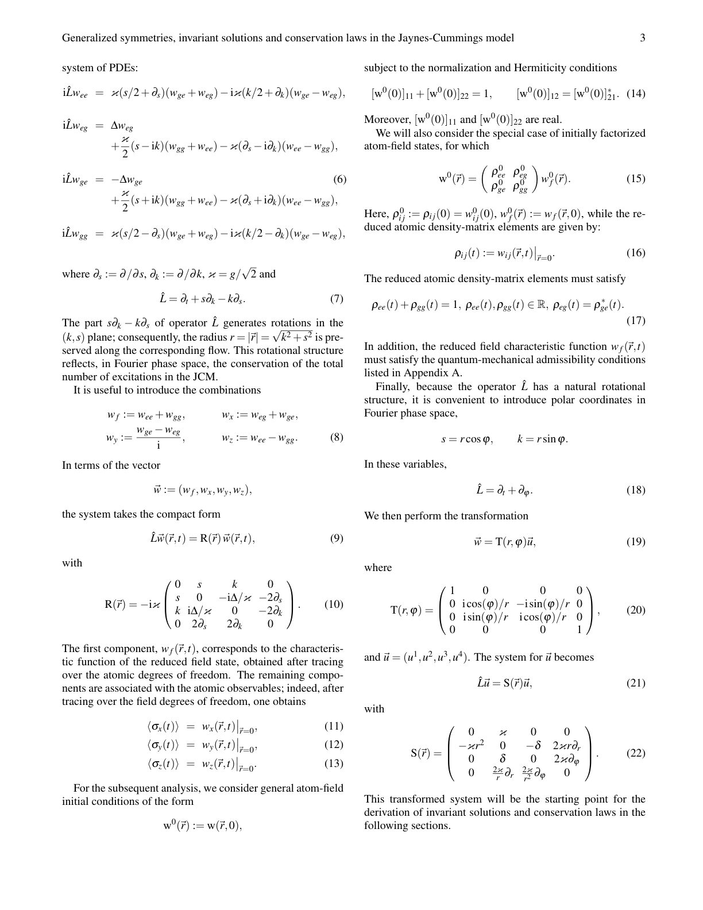
<figcaption class="paper-figure-caption"><b>Fig 2.</b> Low-resolution page preview, page 3</figcaption>
</figure>
<figure class="paper-figure-card">
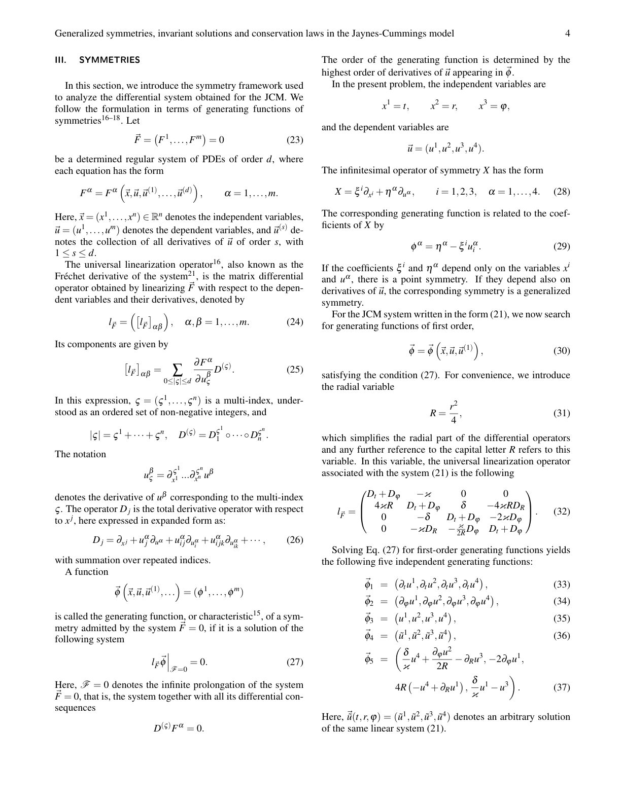
<figcaption class="paper-figure-caption"><b>Fig 3.</b> Low-resolution page preview, page 4</figcaption>
</figure>
<figure class="paper-figure-card">
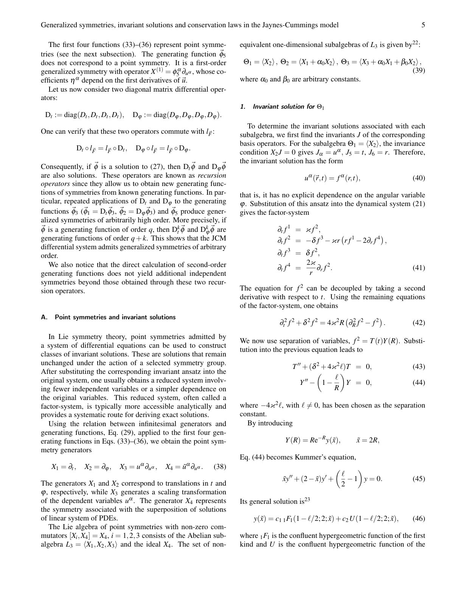
<figcaption class="paper-figure-caption"><b>Fig 4.</b> Low-resolution page preview, page 5</figcaption>
</figure>
<figure class="paper-figure-card">
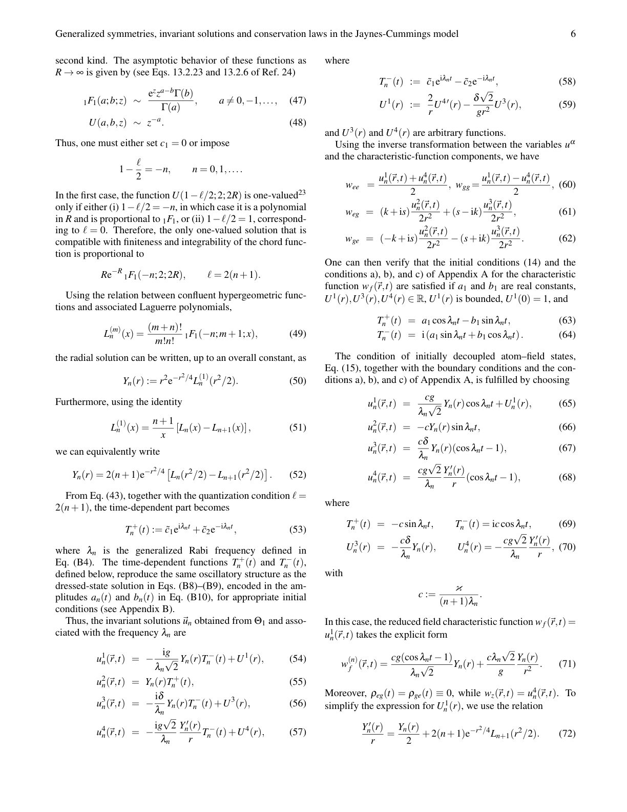
<figcaption class="paper-figure-caption"><b>Fig 5.</b> Low-resolution page preview, page 6</figcaption>
</figure>
</div>

<p><strong>Summary.</strong> This paper applies advanced mathematical techniques, including Lie symmetry analysis and generating functions, to the Jaynes-Cummings model. It successfully derives an infinite set of conservation laws and identifies multiple families of invariant solutions. This provides a comprehensive theoretical framework for understanding energy exchange and correlation dynamics in atom-field quantum interactions.</p>
<p><strong>Why it may be interesting.</strong> This work provides a deep mathematical characterization of an archetypal quantum optics model (JCM) by finding its underlying symmetries and conservation laws. The discovery of higher-order conserved quantities and novel solution classes is highly valuable for understanding non-trivial dynamics in open quantum systems.</p>
<details>
<summary>Detailed structure</summary>
<p><strong>Main problem.</strong> The work investigates generalized symmetries, invariant solutions, and conservation laws governing the dynamics of the Jaynes-Cummings model (JCM).</p>
<p><strong>Main result.</strong> They derived an infinite hierarchy of conserved currents and found two classes of invariant solutions: one recovering standard dressed-state dynamics and another involving Heun polynomials.</p>
<p><strong>Method.</strong> The analysis employs Lie symmetry theory, conservation-law methods using generating functions (Vinogradov's framework), and projecting the von Neumann equation onto a characteristic function representation in phase space.</p>
<p><strong>Model / system.</strong> The system is the Jaynes-Cummings model, describing coherent energy exchange between a two-level atom and a single quantized field mode. The dynamics are governed by the von Neumann equation projected into a PDE system in Fourier phase space.</p>
<p><strong>Key observables.</strong> Atomic populations ($
ho_{ij}$), coherence, reduced-state purity ($P_a$), and moments of the field characteristic function $\mathbf{w}(\vec{r}, t)$.</p>
<p><strong>Important parameters / regimes.</strong> Detuning ($\Delta$), coupling strength ($g$), and excitation number ($n$). The analysis explores resonant regimes.</p>
<p><strong>Assumptions / limitations.</strong> The methodology relies on transforming the dynamics into a PDE system in characteristic function space, allowing for symmetry and conservation law analysis.</p>
<p><strong>Paper structure.</strong> The paper systematically applies symmetry analysis to the JCM's governing PDEs. It first establishes conserved currents using generating functions, then solves for invariant solutions by analyzing specific subalgebras ($\Theta_1, \Theta_2$), leading to explicit forms and quantization conditions.</p>
</details>
<details>
<summary>Abstract</summary>
<p>In this work, we investigate the Jaynes--Cummings model (JCM) using Lie symmetry analysis and conservation-law theory. The dynamics is formulated as a system of partial differential equations by projecting the von Neumann equation onto the atomic degrees of freedom and representing the field mode through its characteristic function. We determine the admitted point and generalized symmetries and construct invariant solutions satisfying the physical conditions imposed by quantum mechanics. The conventional dressed-state dynamics is recovered while a second class of solutions with radial dependence expressed through Heun polynomials is obtained for coupled atom--field configurations.   We also apply the generating functions methodology to derive local conservation laws of the JCM differential system. Besides recovering the conservation of the total number of excitations, we obtain additional conserved currents involving atomic populations, coherence, reduced-state purity, and moments of the field characteristic function. In particular, we derive a balance equation for a combination of atomic purity and coherence whose evolution is controlled by the atom--field coupling and is linked to atom--field correlation and entanglement dynamics. The symmetry structure further generates generalized symmetries and an infinite hierarchy of conservation laws.</p>
</details>
<p><sub><a href="#top">↑ back to top</a></sub></p>

<p><a id="paper-2606.15294"></a></p>
<h3 id="identifying-mobility-edge-from-finite-temperature-spectral-form-factor"><a href="http://arxiv.org/abs/2606.15294v1">Identifying Mobility Edge from Finite Temperature Spectral Form Factor</a></h3>
<p><strong>Authors:</strong> Basudha Roy, Anandamohan Ghosh, Adway Kumar Das<br>
<strong>Type:</strong> theory · <strong>Category:</strong> disordered systems and neural networks · <strong>PDF:</strong> <a href="https://arxiv.org/pdf/2606.15294v1">https://arxiv.org/pdf/2606.15294v1</a><br>
<strong>Analysis basis:</strong> full PDF text, analyzed in chunks
<strong>Topic relevance:</strong> <code>driven-dissipative phase transition</code> <strong>3/5</strong> · <code>methods for driven-dissipative</code> <strong>3/5</strong> · <code>analog quantum simulation</code> <strong>2/5</strong> · <code>non-equilibrium universality</code> <strong>2/5</strong> · <code>Keldysh / 2PI / non-Gaussian methods</code> <strong>1/5</strong> · <code>correlated / nonlocal dissipation</code> <strong>1/5</strong> · <code>entanglement &amp; information structure</code> <strong>1/5</strong> · <code>exotic spin models in light-matter</code> <strong>1/5</strong> · <code>non-equilibrium dynamics</code> <strong>1/5</strong></p>
<div class="figure-strip-hint">↔ Scroll figures horizontally</div>
<div class="paper-figures-scroll">
<figure class="paper-figure-card">
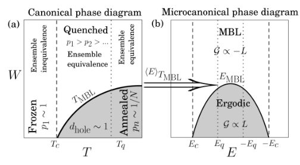
<figcaption class="paper-figure-caption"><b>Fig 1.</b> FIG. 1. Canonical and microcanonical phase diagrams of a generic many-body disordered system where W, T and E are disorder strength, temperature and energy, respectively. (a) Grey dashed vertical lines indicate critical temperatures Tc and Tq. Black solid line denotes the critical temperature TMBL, dual to ME. dhole is the relative depth of the correlation hole of the finite temperature SFF. pn is the Gibbs weight of the nth energy state at temperature T. (b) G is the Thouless conductance like quantity obtained from the spread of a local perturbation (Eq. (23)) and L is the linear size of the system. Grey dashed vertical lines indicate Ec and Eq, dual to Tc and Tq, respectively. Black solid...</figcaption>
</figure>
<figure class="paper-figure-card">
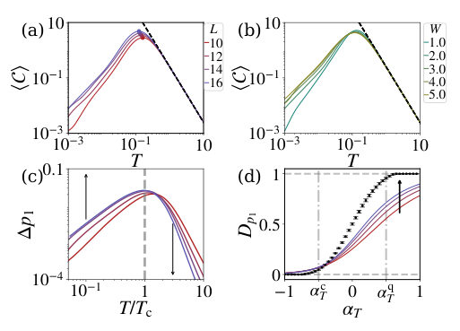
<figcaption class="paper-figure-caption"><b>Fig 2.</b> FIG. 2. (a) Ensemble averaged heat capacity for W = 2 and various values of L. Black dashed line denotes the high temperature behavior. (b) Same quantity as in (a) for L = 16 and different disorder strengths. (c) Difference be- tween the average and typical Gibbs weight of the ground state, ∆p1 ≡ ⟨p1⟩−ptyp 1 . (d) Scaling exponent D(N) p1 as a</figcaption>
</figure>
<figure class="paper-figure-card">
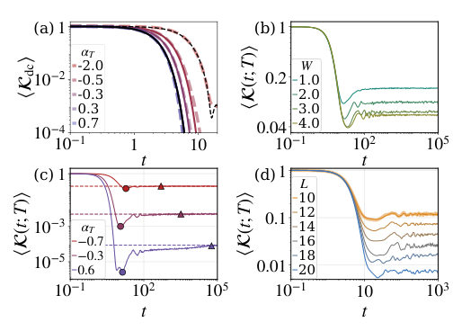
<figcaption class="paper-figure-caption"><b>Fig 3.</b> FIG. 3. (a) Disconnected part of the SFF at different tem- perature exponents (αT ) for L = 16 and W = 2. The black dashed (solid) line show the low (high) temperature approx- imate of Kdc (t; T) . (b) SFF for L = 16 and different dis- order strengths at T = 0.1. (c) SFF for L = 16 and W = 2 and different values of αT . Dashed lines denote the equilib- rium value, K. Circular (triangular) markers denote the dip (relaxation) timescales. (d) SFF calculated using FTLM for W = 5.0, αT = −0.5 and different values of L. The thick line corresponds to SFF computed using ED for the smallest system size.</figcaption>
</figure>
<figure class="paper-figure-card">
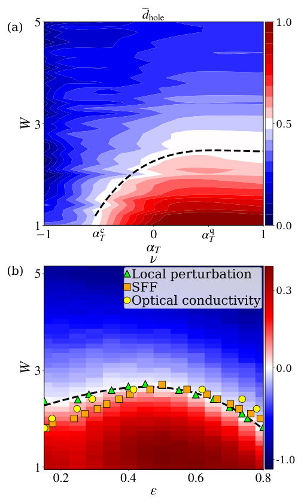
<figcaption class="paper-figure-caption"><b>Fig 4.</b> FIG. 4. (a) Canonical phase diagram: colormap of normal- ized dhole in SFF for L = 16. Black dashed line corresponds to the critical temperature TMBL. (b) Microcanonical phase di- agram: colormap of conductance exponent (ν). The mobility edges obtained from the conductance exponent, the optical conductivity, and the critical energy density ϵMBL are indi- cated by different markers. The quantity ϵMBL, shown for L = 16, is dual to TMBL in panel (a) through Eq. (22). The black dashed line serves as a guide to the eye.</figcaption>
</figure>
</div>

<p><strong>Summary.</strong> The paper proposes using the finite temperature Spectral Form Factor (SFF) as a powerful, computationally accessible diagnostic tool to locate the Mobility Edge in disordered quantum magnets. By showing that the critical energy derived from SFF analysis matches estimates from optical conductivity and conductance measurements, it establishes a general principle for characterizing many-body localization transitions.</p>
<p><strong>Why it may be interesting.</strong> This work provides robust, non-diagonalization methods for locating quantum phase transitions (like MBL) by linking spectral statistics (SFF) directly to measurable transport properties ($\sigma(\omega)$), which is highly relevant for understanding open quantum systems.</p>
<details>
<summary>Detailed structure</summary>
<p><strong>Main problem.</strong> The primary goal is identifying the Mobility Edge (ME) in interacting many-body quantum systems, specifically marking the transition between ergodic and localized phases.</p>
<p><strong>Main result.</strong> The study successfully demonstrates that the ME can be consistently identified using three complementary diagnostics: finite temperature Spectral Form Factor (SFF), local perturbation analysis of conductance, and low-frequency optical conductivity.</p>
<p><strong>Method.</strong> The research employs theoretical tools like the SFF at finite temperatures, analyzing ensemble inequivalence between canonical and microcanonical descriptions, alongside transport measurements derived from autocorrelation functions.</p>
<p><strong>Model / system.</strong> The primary model is the 1D disordered Heisenberg spin-$1/2$ chain with a random Zeeman splitting ($h_j$). The analysis extends to general principles applicable to interacting many-body systems.</p>
<p><strong>Key observables.</strong> Spectral Form Factor (SFF), correlation hole depth ($d_{	ext{hole}}$), conductance exponent ($
u$), and low-frequency optical conductivity exponent ($\eta$).</p>
<p><strong>Important parameters / regimes.</strong> Disorder strength ($W$), Temperature ($T$), Critical Temperature ($T_{MBL}$), and the critical energy density ($\epsilon_{MBL}$).</p>
<p><strong>Assumptions / limitations.</strong> The analysis sometimes relies on approximations like assuming a Gaussian Density of States (DOS) for simplified thermal moment calculations, or using the Dynamical Quantum Typicality (DQT) approach.</p>
<p><strong>Figures summary.</strong> Figures illustrate canonical and microcanonical phase diagrams showing $T_{MBL}$ vs. disorder; heat capacity ($\langle C 
angle$) scaling with system size ($L$); and temperature dependence of transport exponents ($\eta$).</p>
<p><strong>Paper structure.</strong> The paper develops the problem by introducing SFF as a probe, establishing the connection between finite-temperature diagnostics (SFF) and established transport measurements (optical conductivity/conductance exponent), culminating in showing their mutual agreement to pinpoint $\epsilon_{MBL}$.</p>
</details>
<details>
<summary>Abstract</summary>
<p>The spectral form factor (SFF) is a measure of energy correlations and has been widely used to identify the transition from the ergodic to the localized phase in interacting many-body quantum systems. In this work, we show that in a disordered Heisenberg spin-$\frac{1}{2}$ model, the finite temperature SFF can be used to generate a canonical phase diagram exhibiting a critical temperature $T_\mathrm{MBL}$. Using simple ideas of statistical mechanics, we obtain the critical energy density $ε_\mathrm{MBL}$ dual to $T_\mathrm{MBL}$. We show that the mobility edge (ME), numerically estimated from the spread of local perturbations and the optical conductivity, indeed coincides with $ε_\mathrm{MBL}$.</p>
</details>
<p><sub><a href="#top">↑ back to top</a></sub></p>

<p><a id="paper-2606.15245"></a></p>
<h3 id="interaction-and-non-hermiticity-controlled-transmission-in-extended-su-schrieffer-heeger-models"><a href="http://arxiv.org/abs/2606.15245v1">Interaction and non-Hermiticity controlled transmission in extended Su-Schrieffer-Heeger models</a></h3>
<p><strong>Authors:</strong> Syeda Rafisa Rahaman, Shreekantha Sil, Nilanjan Bondyopadhaya<br>
<strong>Type:</strong> theory · <strong>Category:</strong> other · <strong>PDF:</strong> <a href="https://arxiv.org/pdf/2606.15245v1">https://arxiv.org/pdf/2606.15245v1</a><br>
<strong>Analysis basis:</strong> full PDF text, analyzed in chunks
<strong>Topic relevance:</strong> <code>driven-dissipative phase transition</code> <strong>3/5</strong> · <code>methods for driven-dissipative</code> <strong>3/5</strong> · <code>non-equilibrium dynamics</code> <strong>2/5</strong> · <code>non-equilibrium universality</code> <strong>2/5</strong> · <code>Frenkel-Kontorova</code> <strong>1/5</strong> · <code>Keldysh / 2PI / non-Gaussian methods</code> <strong>1/5</strong> · <code>Kondo &amp; dissipative impurity</code> <strong>1/5</strong> · <code>analog quantum simulation</code> <strong>1/5</strong> · <code>correlated / nonlocal dissipation</code> <strong>1/5</strong></p>
<div class="figure-strip-hint">↔ Scroll figures horizontally</div>
<div class="paper-figures-scroll">
<figure class="paper-figure-card">

<figcaption class="paper-figure-caption"><b>Fig 1.</b> FIG. 1. Extended SSH chain connected with baths.</figcaption>
</figure>
<figure class="paper-figure-card">

<figcaption class="paper-figure-caption"><b>Fig 2.</b> FIG. 2. Density plot of T in E −δ3 plane for a Hermitian variant of extended SSH chain with N = 100 unit cells; δ1 = 0.5γ, δ2 = 0.8γ, ϵ1 = ϵ2 = 0.</figcaption>
</figure>
<figure class="paper-figure-card">

<figcaption class="paper-figure-caption"><b>Fig 3.</b> FIG. 3. T vs. δ3 for three different energies E1, E2 and E3; length of the extended SSH chain is N = 100 unit cells; δ1 = 0.5γ, δ2 = 0.8γ. In all subplots, ϵ1 = ϵ2 = 0.</figcaption>
</figure>
<figure class="paper-figure-card">

<figcaption class="paper-figure-caption"><b>Fig 4.</b> FIG. 4. Density plot of T and DOS in E −δ3 plane for a Hermitian variant of extended SSH chain with N = 75 unit cells; δ1 = 0.5γ, δ2 = 0.8γ, ϵ1 = ϵ2 = 0.</figcaption>
</figure>
<figure class="paper-figure-card">

<figcaption class="paper-figure-caption"><b>Fig 5.</b> FIG. 5. Variation of T with N while δ3 is fixed and the energy of the incident plane wave is fixed at E/γ = 1.41421. In (a) δ1 = 0.5γ, δ2 = 0.8γ, δ3 = 0.15γ, (b) δ1 = 0.8γ, δ2 = 0.5γ, δ3 = 0.15γ, (c) δ1 = 0.5γ, δ2 = 0.9γ, δ3 = 0.055γ and (d) δ1 = 0.8γ, δ2 = 0.5γ, δ3 = 0.055γ. In all subplots, ϵ1 = ϵ2 = 0.</figcaption>
</figure>
</div>

<p><strong>Summary.</strong> This paper theoretically analyzes quantum transport through an extended Su-Schrieffer-Heeger model modified by NNN interactions and non-Hermiticity. It demonstrates that these additions induce unique oscillatory behaviors in the transmission coefficient, which are not present in simpler models. The findings highlight how engineered gain/loss can fundamentally alter the electronic properties of low-dimensional quantum systems.</p>
<p><strong>Why it may be interesting.</strong> This work is highly relevant as it extends SSH models—a canonical system in condensed matter physics—into non-Hermitian regimes, providing new insights into how engineered dissipation or gain can control quantum transport phenomena like transparency oscillations.</p>
<details>
<summary>Detailed structure</summary>
<p><strong>Main problem.</strong> The study investigates how next-nearest-neighbor (NNN) interactions and non-Hermitian onsite energies modify quantum transport characteristics in an extended Su-Schrieffer-Heeger (SSH) model.</p>
<p><strong>Main result.</strong> Both NNN interaction and non-Hermiticity introduce significant, novel oscillatory behaviors in the transmission coefficient, which are absent in standard Hermitian SSH models. The system can exhibit $T>1$ in certain broken symmetry regimes.</p>
<p><strong>Method.</strong> The analysis employs scattering matrix theory using the Green's function formalism to calculate the transmission coefficient ($T$) through the extended chain connected to semi-infinite leads.</p>
<p><strong>Model / system.</strong> The model is an extended SSH chain incorporating intra-, inter-, and NNN hopping terms, along with non-Hermitian onsite energies ($\epsilon_1, \epsilon_2$). The Hamiltonian describes this lattice structure coupled to external leads.</p>
<p><strong>Key observables.</strong> Transmission coefficient ($T$), which measures quantum transparency; energy eigenvalues (real vs. imaginary) related to PT-symmetry breaking.</p>
<p><strong>Important parameters / regimes.</strong> NNN interaction strength ($\delta_3$), system size ($N$), non-Hermitian onsite potentials ($\epsilon_1, \epsilon_2$), and hopping parameters ($\delta_1, \delta_2$).</p>
<p><strong>Assumptions / limitations.</strong> The analysis assumes elastic scattering within the middle wire region; calculations are based on solving the Schrödinger equation via Green's functions.</p>
<p><strong>Figures summary.</strong> Figures illustrate $T$ vs. $\delta_3$ showing oscillations (interaction-induced transparency), $T$ vs. $N$ showing regular length oscillations, and comparisons of $T$ in PT-symmetric versus PT-broken regimes.</p>
<p><strong>Paper structure.</strong> The paper systematically develops the Hamiltonian, presents numerical results varying $\delta_3$, then analyzes the effects of non-Hermiticity ($\epsilon$), contrasting topological and non-topological phases for both balanced gain-loss and pure loss/gain scenarios.</p>
</details>
<details>
<summary>Abstract</summary>
<p>We study the transport characteristics of an extended version of the Su-Schrieffer-Heeger (SSH) model with next-nearest-neighbor (NNN) interactions and non-Hermitian onsite energies. We observed that transport in such a system is significantly modified by the NNN interaction and the non-Hermitian terms. The transmission coefficient exhibits oscillatory behavior as the strength of the NNN interaction varies in a fixed-length chain. Moreover, the transmission coefficient also shows oscillation with system size for a fixed strength of the NNN interaction. We find that novel oscillatory behavior of the transmission coefficient, arising form the NNN interaction, is a unique feature of such a model and has not been reported previously. The presence of the non-Hermitian terms also enhances/reduces the transmission coefficient depending on the values of the other system parameters like intra-, inter- and NNN hopping. It appears from our study that both the NNN interaction and the non-Hermiticity introduce significant changes in the transport properties of the extended SSH chain, which are not observed in the standard Hermitian nearest-neighbour variant of the SSH model.</p>
</details>
<p><sub><a href="#top">↑ back to top</a></sub></p>

<p><a id="paper-2606.16259"></a></p>
<h3 id="super-arrhenius-relaxation-of-the-triangular-plaquette-model-in-any-dimension"><a href="http://arxiv.org/abs/2606.16259v1">Super-Arrhenius relaxation of the triangular plaquette model in any dimension</a></h3>
<p><strong>Authors:</strong> Laurent Bartholdi, Ivailo Hartarsky, Ivan Mitrofanov<br>
<strong>Type:</strong> theory · <strong>Category:</strong> statistical mechanics · <strong>PDF:</strong> <a href="https://arxiv.org/pdf/2606.16259v1">https://arxiv.org/pdf/2606.16259v1</a><br>
<strong>Analysis basis:</strong> full PDF text, analyzed in chunks
<strong>Topic relevance:</strong> <code>scars &amp; prethermalization</code> <strong>3/5</strong> · <code>analog quantum simulation</code> <strong>2/5</strong> · <code>non-equilibrium dynamics</code> <strong>2/5</strong> · <code>non-equilibrium universality</code> <strong>2/5</strong> · <code>Keldysh / 2PI / non-Gaussian methods</code> <strong>1/5</strong> · <code>correlated / nonlocal dissipation</code> <strong>1/5</strong> · <code>driven-dissipative phase transition</code> <strong>1/5</strong> · <code>entanglement &amp; information structure</code> <strong>1/5</strong> · <code>methods for driven-dissipative</code> <strong>1/5</strong></p>
<div class="figure-strip-hint">↔ Scroll figures horizontally</div>
<div class="paper-figures-scroll">
<figure class="paper-figure-card">

<figcaption class="paper-figure-caption"><b>Fig 1.</b> Figure 1: A configuration of lamps and switches on the triangular lattice. This is the only figure in which the triangular lattice is actually triangular; later on, we will use the standard orthogonal simplex.</figcaption>
</figure>
<figure class="paper-figure-card">

<figcaption class="paper-figure-caption"><b>Fig 2.</b> Figure 2: Illustration of the renormalisation map R of (10), with Λ2,8 on the left and Λ2,4 on the right, see (6). The red inverted plaquettes (see (9)) on the left are contracted to the vertices on the right. The blue spread plaquette (see Definition 2.11) corresponds to the blue plaquette on the right, while the gray non-spread plaquette has no effect on the renormalised configuration.</figcaption>
</figure>
<figure class="paper-figure-card">

<figcaption class="paper-figure-caption"><b>Fig 3.</b> Figure 3: A typical cycle in C2,8. Its four restrictions to Λr 2,8 for r ∈{0, 1}2 (see (14)) are given in different colors and are all (renormalised) cycles (see Lemma 2.28). In this case, a suitable choice of restriction is the one to Λ1,1 2,8 (odd columns, black and brown points; see (16)), as it is smaller than half the cycle and nonempty (Λ2,1 2,8 also works). Notice that (in two dimensions) there is exactly one other cycle with the same black and brown sites called partial cycle. That other cycle only differs from the one depicted in the leftmost column which contains precisely the sites which are not blue or red in the figure.</figcaption>
</figure>
<figure class="paper-figure-card">

<figcaption class="paper-figure-caption"><b>Fig 4.</b> Figure 4: A Sierpiński gasket spin configuration for d = 2. Dots represent −1 spins. Viewed on the torus T8, this configuration has only one ON lamp, corresponding to the red triangle having three spins in state −1. Viewed on Z2, it has three ON lamps, corresponding to the three red triangles, parts of which are drawn.</figcaption>
</figure>
<figure class="paper-figure-card">

<figcaption class="paper-figure-caption"><b>Fig 5.</b> Figure 5: The canonical paths used in the proof of the upper bound of Theorem 1.2. The other 28 paths are obtained by taking the symmetric difference of these four with a configuration with some of the three internal lamps ON. This increases the number of ON lamps in the intermediate configurations no more than in the initial and final configurations of each path.</figcaption>
</figure>
</div>

<p><strong>Summary.</strong> This paper rigorously analyzes the relaxation time of the triangular plaquette model using advanced mathematical tools from combinatorics and Markov process theory. It derives super-Arrhenius scaling laws for this relaxation time, demonstrating how kinetic constraints lead to complex, non-trivial dynamical behavior even in the absence of explicit quantum interactions.</p>
<p><strong>Why it may be interesting.</strong> While focused on classical statistical mechanics, the study of slow relaxation times (glassy behavior) in lattice models is highly relevant to understanding quantum dynamics in disordered or frustrated quantum systems.</p>
<details>
<summary>Detailed structure</summary>
<p><strong>Main problem.</strong> The paper analyzes the super-Arrhenius relaxation time of a specific statistical physics model, the triangular plaquette model, in arbitrary dimensions.</p>
<p><strong>Main result.</strong> It establishes precise scaling laws for the relaxation time ($T_{	ext{rel}}$) at high inverse temperatures ($eta$), showing both exponential and much larger polynomial/exponential divergences depending on boundary conditions.</p>
<p><strong>Method.</strong> The proofs combine advanced techniques from extremal combinatorics, renormalization group ideas applied to dynamics (Ledrappier subshift), and path coupling methods for Markov processes.</p>
<p><strong>Model / system.</strong> The system is the triangular plaquette model defined on a lattice ($\mathbb{Z}^d$), whose energy Hamiltonian relates to local excitations (plaquettes). The dynamics are governed by Glauber dynamics associated with the Gibbs measure $\mu_	au^\Lambda(\sigma) \propto e^{-eta H}$.</p>
<p><strong>Key observables.</strong> Relaxation time ($T_{	ext{rel}}$), uniqueness of the infinite volume Gibbs measure ($\mu$), and the scaling behavior of these quantities.</p>
<p><strong>Important parameters / regimes.</strong> Inverse temperature ($eta > 0$), lattice dimension ($d \ge 2$), and finite domain size ($n$).</p>
<p><strong>Assumptions / limitations.</strong> The analysis relies on establishing structural properties of 'good chains' and admissible sets via combinatorial lemmas, and uses path coupling arguments for upper bounds.</p>
<p><strong>Figures summary.</strong> Figures illustrate the configuration on the triangular lattice (plaquette model) and show canonical paths used in bounding the relaxation time through coupling constructions.</p>
<p><strong>Paper structure.</strong> The paper progresses by defining the dynamics and relaxation time using Dirichlet forms, deriving combinatorial tools related to plaquettes and chains, establishing lower bounds via these combinatorial bottlenecks, and finally proving upper bounds using path coupling techniques on tori.</p>
</details>
<details>
<summary>Abstract</summary>
<p>Consider the following plaquette model from statistical physics: a lamp lies at every vertex of the triangular lattice and a switch lies at every even vertex of the (bipartite) dual hexagonal lattice. Each switch toggles the three lamps on its face. The energy of a configuration is the number of ON lamps.   For the Glauber dynamics associated with the Gibbs measure defined by this Hamiltonian at any inverse temperature $β>0$, we show that, in any dimension $d\ge 2$, the infinite volume relaxation time satisfies \[e^{β^2/C}/C \le T_{\mathrm{rel}}\le Ce^{e^{Cβ}}\] for some $C>0$. Our result entails that the Gibbs measure is unique. The $e^{β^2}$ scaling was conjectured by Newman and Moore in 1999 and matches the behaviour of supercritical rooted kinetically constrained models such as the East model, thus recovering fragile glass phenomenology in the absence of kinetic constraints. More precisely, we show that, on a torus of side length $2^k$, when $β\to\infty$ and $k/β\to0$, we have $T_{\mathrm{rel}}=e^{2βk(1+o(1))}$. Quite surprisingly, however, we also prove that, on non-periodic finite domains of size $n\le e^{β/C}$ for large $C>0$, we have the much larger asymptotics $\ln T_{\mathrm{rel}}=βn^{Θ(1)}$.   The main ingredients of the proofs are new results in extremal and enumerative combinatorics and rely on renormalisation ideas for the dynamics and its groundstates also known as the Ledrappier subshift. We note consequences of our results to geometric group theory (more precisely to the complexity of the word problem for the Baumslag finitely presented group) and to ergodic theory.</p>
</details>
<p><sub><a href="#top">↑ back to top</a></sub></p>

<p><a id="paper-2606.16399"></a></p>
<h3 id="non-equilibrium-model-selection-via-finite-time-thermodynamics"><a href="http://arxiv.org/abs/2606.16399v1">Non-Equilibrium Model Selection via Finite-Time Thermodynamics</a></h3>
<p><strong>Authors:</strong> Masayuki Ohzeki<br>
<strong>Type:</strong> theory · <strong>Category:</strong> disordered systems and neural networks · <strong>PDF:</strong> <a href="https://arxiv.org/pdf/2606.16399v1">https://arxiv.org/pdf/2606.16399v1</a><br>
<strong>Analysis basis:</strong> full PDF text, analyzed in chunks
<strong>Topic relevance:</strong> <code>methods for driven-dissipative</code> <strong>3/5</strong> · <code>non-equilibrium universality</code> <strong>3/5</strong> · <code>driven-dissipative phase transition</code> <strong>2/5</strong> · <code>non-equilibrium dynamics</code> <strong>2/5</strong> · <code>Keldysh / 2PI / non-Gaussian methods</code> <strong>1/5</strong> · <code>correlated / nonlocal dissipation</code> <strong>1/5</strong> · <code>entanglement &amp; information structure</code> <strong>1/5</strong></p>
<div class="figure-strip-hint">↔ Scroll figures horizontally</div>
<div class="paper-figures-scroll">
<figure class="paper-figure-card">

<figcaption class="paper-figure-caption"><b>Fig 1.</b> Low-resolution page preview, page 2</figcaption>
</figure>
<figure class="paper-figure-card">

<figcaption class="paper-figure-caption"><b>Fig 2.</b> Low-resolution page preview, page 3</figcaption>
</figure>
<figure class="paper-figure-card">

<figcaption class="paper-figure-caption"><b>Fig 3.</b> Low-resolution page preview, page 4</figcaption>
</figure>
</div>

<p><strong>Summary.</strong> This paper develops a theoretical framework to adapt model selection techniques for complex statistical models operating under finite resources. It replaces equilibrium free energy calculations with a finite-time analogue by incorporating the dynamics of learning processes into singularity theory. This provides a new, resource-aware measure of model complexity relevant for time-bounded inference.</p>
<p><strong>Why it may be interesting.</strong> While focused on ML inference, the methodology of deriving complexity measures from dynamical processes and resource limitations has parallels in non-equilibrium quantum thermodynamics, particularly when analyzing relaxation or measurement protocols that are inherently time-limited.</p>
<details>
<summary>Detailed structure</summary>
<p><strong>Main problem.</strong> The paper extends model selection criteria, traditionally derived from equilibrium statistical mechanics (like WAIC/WBIC), to the regime of finite-time, resource-constrained learning dynamics.</p>
<p><strong>Main result.</strong> It formulates a finite-time analogue of Watanabe's BIC ($WBIC_R$), which replaces equilibrium complexity measures with a resource-dependent real log canonical threshold ($\lambda_R$).</p>
<p><strong>Method.</strong> The authors adapt singular learning theory by modeling the learning process as a stochastic path governed by a transition kernel, allowing for the calculation of an effective free energy based on this finite-time ensemble.</p>
<p><strong>Model / system.</strong> The model is statistical inference applied to machine learning, specifically addressing parameter estimation in singular models (like deep neural networks). The dynamics are approximated using processes like Stochastic Gradient Langevin Dynamics (SGLD) under a resource constraint $R$.</p>
<p><strong>Key observables.</strong> Finite-time free energy ($WBIC_R$), Resource-dependent Real Log Canonical Threshold ($\lambda_R$), and the structural information measure called epiplexity.</p>
<p><strong>Important parameters / regimes.</strong> Resource constraint ($R$), Time horizon ($T$), Inverse temperature $eta^* = 1/\ln N$, and the effective loss function $L_R(	heta)$.</p>
<p><strong>Assumptions / limitations.</strong> The derivation assumes that the endpoint density of the learning process can be locally represented by an analytic effective potential, which is crucial for applying singular theory.</p>
<p><strong>Paper structure.</strong> The paper first establishes the failure of classical criteria in singular models. It then develops the non-equilibrium extension by replacing equilibrium posteriors with ensembles generated by learning dynamics under resource constraints. The core mathematical machinery involves adapting singularity theory to this finite-time, path-dependent setting.</p>
</details>
<details>
<summary>Abstract</summary>
<p>Information criteria such as WAIC and WBIC extend model selection to singular learning machines, but they are usually derived for equilibrium posteriors. We formulate a finite-time analogue of WBIC by replacing the equilibrium posterior with an effective ensemble generated by learning dynamics under a resource constraint. When this ensemble admits an analytic effective potential, singular learning theory yields a resource-dependent real log canonical threshold. The resulting estimator gives a computable thermodynamic contribution to time-bounded MDL and identifies the finite-time singular complexity relevant to the structural information measured by epiplexity.</p>
</details>
<p><sub><a href="#top">↑ back to top</a></sub></p>

<p><a id="paper-2606.16336"></a></p>
<h3 id="optimizing-resource-bounds-in-direct-fidelity-estimation"><a href="http://arxiv.org/abs/2606.16336v1">Optimizing resource bounds in direct fidelity estimation</a></h3>
<p><strong>Authors:</strong> Netanel Barel, Lee Peleg, Yotam Kadish, Amit Ben Kish, Yotam Shapira<br>
<strong>Type:</strong> theory · <strong>Category:</strong> quantum information and computing · <strong>PDF:</strong> <a href="https://arxiv.org/pdf/2606.16336v1">https://arxiv.org/pdf/2606.16336v1</a><br>
<strong>Analysis basis:</strong> full PDF text, analyzed in chunks
<strong>Topic relevance:</strong> <code>quantum measurements</code> <strong>3/5</strong> · <code>QC/QI experiment</code> <strong>2/5</strong> · <code>measurement-induced transitions</code> <strong>2/5</strong> · <code>Keldysh / 2PI / non-Gaussian methods</code> <strong>1/5</strong> · <code>analog quantum simulation</code> <strong>1/5</strong> · <code>correlated / nonlocal dissipation</code> <strong>1/5</strong> · <code>driven-dissipative phase transition</code> <strong>1/5</strong> · <code>entanglement &amp; information structure</code> <strong>1/5</strong> · <code>methods for driven-dissipative</code> <strong>1/5</strong></p>
<div class="figure-strip-hint">↔ Scroll figures horizontally</div>
<div class="paper-figures-scroll">
<figure class="paper-figure-card">

<figcaption class="paper-figure-caption"><b>Fig 1.</b> FIG. 1. Left: upper bound on the mean number of measure- ments (10) for a general state as a function of p as described in (1), for E = 0.05 and ∆= 0.1, and for various qubit numbers (color). The dashed lines correspond to the upper bound with ϵ1 = ϵ2 and δ1 = δ2 without using the addi- tional information about the channel, their value grows with the qubits’ number. The inset is the ratio of the solid lines to the dashed lines, marking the reduction in measurements afforded by our method. Right: number of measurements for a stabilizer state (it does not depend on the qubits’ number, so there is only one curve for each qubits’ number). The blue curve uses the additional information for the...</figcaption>
</figure>
<figure class="paper-figure-card">

<figcaption class="paper-figure-caption"><b>Fig 2.</b> FIG. 2. Histogram of 1000 fidelity estimations, for a general state (left) and for a stabilizer state (right), for N = 5 qubits, E = 0.05 and ∆= 0.1. For the general state the symmetric allocation ϵ1 = ϵ2, δ1 = δ2 (blue, upper right star in the left panel of Fig. 1) is compared to the optimal allocation without using the information about the channel (orange, p = 1, lower right red star), and to the optimal allocation when using this information (green, p = 0.19, left red star). For the stabilizer state, the symmetric allocation (blue,black star in the right part of Fig. 1) - the optimal allocation without using the information about the channel - is compared to the optimal allocation...</figcaption>
</figure>
<figure class="paper-figure-card">

<figcaption class="paper-figure-caption"><b>Fig 3.</b> FIG. 3. Left: histogram of total measurements’ number used for a general state with N = 5 qubits, with E = 0.05, ∆= 0.1. The colors are the same as in the left part of Fig. 2. Right: the average number of measurements for several qubits’ number (the std is smaller than circle size for all points).</figcaption>
</figure>
</div>

<p><strong>Summary.</strong> This work optimizes the measurement resources required for Direct Fidelity Estimation (DFE) in quantum systems. It shows that assuming structural knowledge about noise channels allows for significantly tighter, and thus more efficient, resource bounds than worst-case analyses suggest. The methodology involves advanced constrained optimization over error and confidence budgets.</p>
<p><strong>Why it may be interesting.</strong> While focused on quantum estimation theory rather than direct AMO Hamiltonian simulation, the rigorous resource bounding techniques and the explicit handling of structured noise are highly relevant for designing practical quantum measurements in experimental platforms like trapped ions or cavity QED systems where noise characterization is key.</p>
<details>
<summary>Detailed structure</summary>
<p><strong>Main problem.</strong> The paper addresses optimizing resource bounds for Direct Fidelity Estimation (DFE), a technique used to estimate quantum state fidelity without full tomography.</p>
<p><strong>Main result.</strong> By incorporating structural information about noise channels, the required number of measurements can be significantly reduced compared to worst-case theoretical bounds. Furthermore, optimal allocation of error and confidence budgets between sampling and estimation steps improves resource efficiency.</p>
<p><strong>Method.</strong> The authors reformulate the analysis into a constrained optimization problem involving separate error ($\epsilon$) and confidence ($\delta$) parameters for the two probabilistic stages of DFE. They compare symmetric vs. optimized budget splitting.</p>
<p><strong>Model / system.</strong> The system involves estimating the fidelity $F(
ho, \sigma)$ between an experimentally prepared state $\sigma$ and a target pure state $
ho$ in an N-qubit quantum system. The analysis considers general states and specialized stabilizer states under structured noise assumptions.</p>
<p><strong>Key observables.</strong> Fidelity ($F$), total estimation error ($E$), confidence level ($\Delta$), and the required number of measurements ($m$).</p>
<p><strong>Important parameters / regimes.</strong> Noise parameter $p$ (for structured noise), qubit number $N$, accuracy $\epsilon$, and confidence $\delta$.</p>
<p><strong>Assumptions / limitations.</strong> The analysis assumes a two-stage probabilistic estimation process. A key limitation noted is that the derived theoretical bounds might be overly conservative compared to actual experimental fluctuations.</p>
<p><strong>Figures summary.</strong> Figures compare upper bounds on measurements ($E(m)$) for general vs. stabilizer states under structured noise assumptions, and show histograms comparing different protocols' performance.</p>
<p><strong>Paper structure.</strong> The paper introduces DFE, details the two-step probabilistic error control, develops the constrained optimization framework to optimally allocate accuracy/confidence budgets, and demonstrates savings using structured noise models.</p>
</details>
<details>
<summary>Abstract</summary>
<p>Direct fidelity estimation provides a way to estimate the fidelity between an experimentally prepared state and a desired pure target state without performing full tomography. Two influential formulations were introduced in 2011 by Flammia and Liu and by da Silva, Landon-Cardinal, and Poulin. In these protocols, the total estimation error is controlled through two distinct probabilistic steps: first, the fidelity is approximated using randomly sampled Pauli observables; second, each sampled expectation value is estimated from finitely many measurement outcomes. In this work we show that additional structural information about the noise can substantially sharpen the corresponding resource bounds. In particular, for some canonical channels the effective number of sampled Pauli settings can be reduced, leading to lower measurement cost both in the general pure-state setting and in the case of a stabilizer state. These results illustrate a broader point: worst-case confidence bounds in direct fidelity estimation can be significantly conservative when experimentally relevant structure is ignored. As a technical ingredient, we also revisit the allocation of the total accuracy and confidence budgets between the two probabilistic steps. Reformulating the analysis in terms of separate error parameters yields a constrained optimization problem whose solution lowers the average number of measurements in the general pure-state setting. Numerical simulations based on quantum circuits implemented in Qiskit illustrate both the improvement obtained under structured-noise assumptions and the conservativeness of the original worst-case bounds.</p>
</details>
<p><sub><a href="#top">↑ back to top</a></sub></p>

<p><a id="paper-2606.16443"></a></p>
<h3 id="persistence-properties-of-a-phase-ordering-system-with-competing-dynamics"><a href="http://arxiv.org/abs/2606.16443v1">Persistence Properties of a Phase-ordering System with Competing Dynamics</a></h3>
<p><strong>Authors:</strong> Shubham Thwal, Suman Majumder<br>
<strong>Type:</strong> theory · <strong>Category:</strong> statistical mechanics · <strong>PDF:</strong> <a href="https://arxiv.org/pdf/2606.16443v1">https://arxiv.org/pdf/2606.16443v1</a><br>
<strong>Analysis basis:</strong> full PDF text, analyzed in chunks
<strong>Topic relevance:</strong> <code>methods for driven-dissipative</code> <strong>3/5</strong> · <code>non-equilibrium universality</code> <strong>3/5</strong> · <code>analog quantum simulation</code> <strong>2/5</strong> · <code>non-equilibrium dynamics</code> <strong>2/5</strong> · <code>correlated / nonlocal dissipation</code> <strong>1/5</strong> · <code>driven-dissipative phase transition</code> <strong>1/5</strong> · <code>exotic spin models in light-matter</code> <strong>1/5</strong></p>
<div class="figure-strip-hint">↔ Scroll figures horizontally</div>
<div class="paper-figures-scroll">
<figure class="paper-figure-card">

<figcaption class="paper-figure-caption"><b>Fig 1.</b> FIG. 1. Snapshots of the original lattice at different times depicting the evolution of a system having L = 256 during phase ordering with mixed conserved and nonconserved dynamics at T = 0, for two values of pr. The up spins are marked black and the down spins are left unmarked.</figcaption>
</figure>
<figure class="paper-figure-card">

<figcaption class="paper-figure-caption"><b>Fig 2.</b> FIG. 2. Demonstration of the scaling behavior encrypted in Eq. (7) for (a) pr = 0.001 and (b) 0.1. The main frame shows the plot of C(r, t) as a function r/ℓ(t) at different times, as indicated. The inset shows the corresponding unscaled plots. (c) Double-log plots of the time dependence of the average domain length ℓ(t) for three different values of pr for a system of length L = 256. The black dashed lines represent the respective power-law fits using the ansatz in Eq. (8).</figcaption>
</figure>
<figure class="paper-figure-card">

<figcaption class="paper-figure-caption"><b>Fig 3.</b> FIG. 4. (a) Scaling of the crossover time τc as a function of pr for phase ordering system of size L = 256. The dashed line is a fit to form in Eq. 10. (b) Variation of the saturated value of persistence probabilities as a function of pr.</figcaption>
</figure>
<figure class="paper-figure-card">

<figcaption class="paper-figure-caption"><b>Fig 4.</b> FIG. 3. (a) The main panel shows log-log plots of the total per- sistence probability Pt(t) as a function of time for different values of pr. The dashed line demonstrates the consistency of the late- time data with a power-law decay characterized by the exponent θt = 0.225. The inset displays the time dependence of the quan- tity Pt(t)t0.225 to further illustrate the agreement of the late-time behavior with the expected power-law scaling. (b) The same set of plots for the spin-flip persistence probability Pf(t). In all cases, the data correspond to a system size L = 256.</figcaption>
</figure>
<figure class="paper-figure-card">

<figcaption class="paper-figure-caption"><b>Fig 5.</b> FIG. 5. ((a) Double-logarithmic plots of the scaled total persis- tence probability Pt(t)/P sat t , as a function of the scaling variable y ≡t/τc for different values of pr, obtained for a system of size L = 256. (b) Corresponding plots for the scaled spin-flip persis- tence probability Pf(t)/P sat f . The dashed lines in both panels repre- sent the expected power-law decay ∼y−0.225.</figcaption>
</figure>
</div>

<p><strong>Summary.</strong> This work analyzes the persistence properties during phase ordering in an Ising model subjected to competing spin-flip and spin-exchange dynamics at zero temperature. While standard measures of persistence retain universal scaling behavior consistent with nonconserved dynamics, the composite measure reveals a strong, non-universal dependence on the competition parameter $p_r$, highlighting distinct physical consequences for different types of memory.</p>
<p><strong>Why it may be interesting.</strong> The study provides a detailed quantitative comparison of how different microscopic dynamics (conserved vs. nonconserved) affect macroscopic memory effects (persistence), which is crucial for understanding relaxation in complex many-body systems relevant to AMO physics or condensed matter modeling.</p>
<details>
<summary>Detailed structure</summary>
<p><strong>Main problem.</strong> The study investigates how persistence properties change during phase ordering when a system evolves under competing dynamics involving both nonconserved (spin-flip) and conserved (spin-exchange) interactions.</p>
<p><strong>Main result.</strong> For total and spin-flip persistence, the exponents remain universal and consistent with purely nonconserved dynamics; however, the composite persistence measure shows strong dependence on the relative probability of the competing moves, breaking expected scaling relations.</p>
<p><strong>Method.</strong> The analysis relies heavily on Monte Carlo simulations at zero temperature to track time evolution and calculate various persistence probabilities and their associated spatial correlation functions.</p>
<p><strong>Model / system.</strong> The system is a two-dimensional Ising model undergoing phase ordering. The dynamics are mixed, controlled by the probability $p_r$ of executing a nonconserved spin-flip move versus a conserved spin-exchange move.</p>
<p><strong>Key observables.</strong> Total persistence probability ($P_t(t)$), spin-flip persistence probability ($P_f(t)$), and composite persistence probability ($P_c(t)$); decay exponents ($  heta_i$); fractal dimensions ($d_i^f$).</p>
<p><strong>Important parameters / regimes.</strong> The relative probability $p_r$ controlling the competition between dynamics; zero temperature ($T=0$); spatial dimension $d=2$.</p>
<p><strong>Assumptions / limitations.</strong> The analysis assumes that asymptotic power-law decay and dynamic scaling forms can be successfully applied to characterize long-time behavior.</p>
<p><strong>Figures summary.</strong> Figures show snapshots of domain growth, confirmation of scaling behavior using correlation functions, and double-logarithmic plots demonstrating the collapse of scaled persistence probabilities for different dynamics.</p>
<p><strong>Paper structure.</strong> The paper first establishes the model and defines three distinct persistence measures. It then analyzes the asymptotic decay and scaling relations for the total and spin-flip measures, finding consistency with known results. Finally, it contrasts this by analyzing the composite measure, demonstrating its unique dependence on $p_r$ and failure to satisfy the established scaling laws.</p>
</details>
<details>
<summary>Abstract</summary>
<p>We investigate the persistence properties during phase ordering in the two-dimensional ($d=2$) Ising model evolving under competing nonconserved spin-flip and conserved spin-exchange dynamics by means of Monte Carlo simulations at zero temperature. We examine three distinct persistence probabilities: (i) the total persistence probability, defined as the probability that a lattice site has never experienced a change in the sign of the spin residing there; (ii) the spin-flip persistence probability, which exclusively measures the fraction of sites that have never undergone a spin-flip event; and (iii) the composite persistence probability, defined as the fraction of sites that have experienced neither a spin-flip nor a spin-exchange event. In the asymptotic regime, both the total and spin-flip persistence probabilities exhibit identical power-law decay, irrespective of the relative occurrence probability of the spin-flip move $p_r$. The corresponding persistence exponent $θ_i \approx 0.225$, is found to be consistent with the value reported for systems evolving purely under nonconserved dynamics. We further demonstrate that both persistence measures satisfy the scaling relation $d-d_f^i=θ_i/α_i$, where $d_f^i$ is the fractal dimension of the corresponding persistence lattice and $α_i\approx 1/2$ characterizes the asymptotic power-law growth of spatially correlated regions of non-persistent spins. In contrast, although the composite persistence probability also exhibits asymptotic power-law decay, both the corresponding persistence exponent $θ_{\rm c}$ and the fractal dimension $d_f^{\rm c}$ of the persistence lattice show strong dependence on $p_r$. Combined with the presence of a universal growth exponent $α_{\rm c}\approx 1/2$, this leads to the breakdown of the scaling relation among the characteristic exponents for the composite persistence.</p>
</details>
<p><sub><a href="#top">↑ back to top</a></sub></p>

<p><a id="paper-2606.16674"></a></p>
<h3 id="possible-high-temperature-superconductivity-induced-by-coupling-to-proximate-hyperbolic-photon-modes"><a href="http://arxiv.org/abs/2606.16674v1">Possible high temperature superconductivity induced by coupling to proximate hyperbolic photon modes</a></h3>
<p><strong>Authors:</strong> Zhiyu Dong, Patrick A. Lee<br>
<strong>Type:</strong> theory · <strong>Category:</strong> strongly correlated electrons · <strong>PDF:</strong> <a href="https://arxiv.org/pdf/2606.16674v1">https://arxiv.org/pdf/2606.16674v1</a><br>
<strong>Analysis basis:</strong> full PDF text, analyzed in chunks
<strong>Topic relevance:</strong> <code>Keldysh / 2PI / non-Gaussian methods</code> <strong>3/5</strong> · <code>Kondo &amp; dissipative impurity</code> <strong>2/5</strong> · <code>analog quantum simulation</code> <strong>2/5</strong> · <code>methods for driven-dissipative</code> <strong>2/5</strong> · <code>Tavis-Cummings &amp; cavity-many-emitter</code> <strong>1/5</strong> · <code>correlated cavity matter</code> <strong>1/5</strong> · <code>driven-dissipative phase transition</code> <strong>1/5</strong> · <code>interference shaping light</code> <strong>1/5</strong></p>
<div class="figure-strip-hint">↔ Scroll figures horizontally</div>
<div class="paper-figures-scroll">
<figure class="paper-figure-card">

<figcaption class="paper-figure-caption"><b>Fig 1.</b> FIG. 1. The structure of the gap function numerically solved from diagonalizing the linearized gap equation. a) ξ- dependence of the even-ξ solution at the lowest positive Mat- subara frequency. b) ωn-dependence at ξ = 0. c) even-ξ- channel eigenfunction. d) odd-ξ-channel eigenfunction. The even-ξ solution is parabolic, is nonzero at ξ = 0, and is local- ized in Matsubara frequency within the bandwidth of order ¯ω, while the odd-ξ solution is linear in ξ. Here ∆is shown in arbitrary units because the linearized equation only fixes the eigenvector shape, not its overall magnitude.</figcaption>
</figure>
<figure class="paper-figure-card">

<figcaption class="paper-figure-caption"><b>Fig 2.</b> FIG. 2. Diagrammatic illustration of the effective low-energy pair interaction. Solid lines denote electron propagators, and wavy lines denote HM propagators. Panel (a) shows the first- order diagram. Panel (b) collects the second-order Kohn- Luttinger diagrams; they are the bubble diagram (top left), the vertex corrections (top right and bottom left), and the crossed diagram (bottom right). Panel (c) shows the Cooper- ladder contribution. In the usual perturbative framework, this type of diagram should not be counted as part of the “two-particle irreducible interaction”. However, here we are integrating out high-energy electrons to get an effective pair- ing interaction for low-energy...</figcaption>
</figure>
<figure class="paper-figure-card">

<figcaption class="paper-figure-caption"><b>Fig 3.</b> FIG. 3. a) Low-energy quasiparticle dispersion in the pres- ence of an even-ξ ∆channel obtained from the nonlinear self- consistency gap equation. b,c) Tunneling density of states in the presence of an even-ξ ∆channel. Panel b) zooms into an ¯ω-scale energy window around the Fermi surface, where the density of states has a shape similar to that of a conventional s-wave gap. Panel c) shows the tunneling density of states over larger energy range with a choice of Λ/¯ω = 10. The important distinction from conventional BCS theory is that the density of states is modified across a wider energy window comparable to Λ around Fermi surface. This is because the parabolic gap grows parabolically at...</figcaption>
</figure>
</div>

<p><strong>Summary.</strong> This paper theoretically explores high-temperature superconductivity arising from the coupling between electrons and hyperbolic photon modes found in polar insulators like hBN. By treating the HM interaction within a generalized pairing framework, the authors show that even repulsive interactions can induce unconventional pairing via an energy-space mechanism. The results suggest that $T_c$ can be significantly enhanced, potentially reaching hundreds of Kelvin under favorable material configurations.</p>
<p><strong>Why it may be interesting.</strong> This work provides a concrete theoretical framework for unconventional superconductivity in hybrid quantum materials, linking topological photonics (HM modes) directly to high-$T_c$ mechanisms typically associated with strong electronic correlations.</p>
<details>
<summary>Detailed structure</summary>
<p><strong>Main problem.</strong> The study investigates the possibility of achieving high-temperature superconductivity mediated by coupling between conduction electrons in a metal film and hyperbolic photon modes (HM) present in insulating substrates like hBN.</p>
<p><strong>Main result.</strong> The HM interaction, despite being repulsive, facilitates unconventional pairing via an energy-space mechanism analogous to Anderson-Morel theory, leading to estimates of very high critical temperatures ($T_c$).</p>
<p><strong>Method.</strong> The analysis employs Green's function formalism and diagrammatic techniques to calculate the electron self-energy ($\Sigma$) and project the resulting interaction onto the Cooper pairing channel.</p>
<p><strong>Model / system.</strong> The model considers a 2D Fermi sea (metal) placed on top of hBN, where the coupling is mediated by longitudinal hyperbolic photon modes. The physics differs significantly from standard electron-phonon coupling due to the HM's energy dependence.</p>
<p><strong>Key observables.</strong> Superconducting critical temperature ($T_c$), quasiparticle renormalization factors ($Z$, $v_1/v_F$), and the effective pairing interaction strength ($\lambda_{	ext{eff}}$).</p>
<p><strong>Important parameters / regimes.</strong> Dimensionless coupling constant ($\lambda_0$), characteristic HM frequency ($ar{\omega}$), energy cutoff scale ($\Lambda$), and physical separation distance ($z$).</p>
<p><strong>Assumptions / limitations.</strong> The analysis relies on weak coupling approximations, the Anderson-Morel step approximation in frequency space, and various continuum/small parameter limits for mathematical tractability.</p>
<p><strong>Figures summary.</strong> Figures illustrate diagrammatic contributions to the effective low-energy pair interaction (e.g., Kohn-Luttinger diagrams) and show how the superconducting gap modifies the density of states over a wide energy window.</p>
<p><strong>Paper structure.</strong> The paper progresses from calculating the self-energy correction ($\Sigma'$) due to HM exchange, determining quasiparticle renormalization effects, deriving the effective pairing interaction ($V_{	ext{pair}}$), and finally solving the linearized gap equation to estimate $T_c$.</p>
</details>
<details>
<summary>Abstract</summary>
<p>The hyperbolic mode (HM) refers to a polariton mode in a polar insulator where the dielectric function is negative in some direction of propagation. Within a frequency window the light occupies a greatly expanded region in momentum space. The HM in hexagonal Boron Nitride (hBN) has been under intense study and we consider placing a metal directly on top hBN and ask whether its physical properties can be strongly affected. While the problem resembles superficially the electron phonon coupling problem, there are important differences. Due to the longitudinal nature of the HM mode the coupling is driven by time dependent charge fluctuations which results in a coupling that strongly increases with the energy difference of the initial and final states. We find a significant modification of the wavefunction and velocity renormalization and we identify the dimensionless coupling constant $λ_0$ that controls this effect. The virtual exchange of HM leads to a repulsive interaction. However, due to its strong energy dependence, pairing is possible by a process analogous to the Anderson-Morel mechanism, but in energy space instead of frequency space. We estimate the effective pairing interaction and find that very high $T_c$ is possible, even for small $λ_0$ where the theory is controlled. We provide estimates using realistic parameters.</p>
</details>
<p><sub><a href="#top">↑ back to top</a></sub></p>

<p><a id="paper-2606.15303"></a></p>
<h3 id="inverted-dirac-oscillator"><a href="http://arxiv.org/abs/2606.15303v1">Inverted Dirac oscillator</a></h3>
<p><strong>Authors:</strong> Mustapha Maamache<br>
<strong>Type:</strong> theory · <strong>Category:</strong> other · <strong>PDF:</strong> <a href="https://arxiv.org/pdf/2606.15303v1">https://arxiv.org/pdf/2606.15303v1</a><br>
<strong>Analysis basis:</strong> full PDF text, analyzed in chunks
<strong>Topic relevance:</strong> <code>driven-dissipative phase transition</code> <strong>3/5</strong> · <code>Keldysh / 2PI / non-Gaussian methods</code> <strong>2/5</strong> · <code>Kondo &amp; dissipative impurity</code> <strong>2/5</strong> · <code>non-equilibrium dynamics</code> <strong>2/5</strong> · <code>correlated / nonlocal dissipation</code> <strong>1/5</strong> · <code>methods for driven-dissipative</code> <strong>1/5</strong> · <code>non-equilibrium universality</code> <strong>1/5</strong></p>
<div class="figure-strip-hint">↔ Scroll figures horizontally</div>
<div class="paper-figures-scroll">
<figure class="paper-figure-card">

<figcaption class="paper-figure-caption"><b>Fig 1.</b> Low-resolution page preview, page 2</figcaption>
</figure>
<figure class="paper-figure-card">

<figcaption class="paper-figure-caption"><b>Fig 2.</b> Low-resolution page preview, page 3</figcaption>
</figure>
<figure class="paper-figure-card">

<figcaption class="paper-figure-caption"><b>Fig 3.</b> Low-resolution page preview, page 4</figcaption>
</figure>
<figure class="paper-figure-card">

<figcaption class="paper-figure-caption"><b>Fig 4.</b> Low-resolution page preview, page 5</figcaption>
</figure>
<figure class="paper-figure-card">

<figcaption class="paper-figure-caption"><b>Fig 5.</b> Low-resolution page preview, page 6</figcaption>
</figure>
</div>

<p><strong>Summary.</strong> This work tackles the mathematically challenging Dirac inverted oscillator, a relativistic system exhibiting non-Hermitian behavior. By proving its pseudo-$\mathcal{PT}$-symmetry and employing a specific transformation, the authors successfully map it onto the well-understood standard Dirac oscillator. This allows for the calculation of its energy spectrum in the non-relativistic limit.</p>
<p><strong>Why it may be interesting.</strong> The study of pseudo-$\mathcal{PT}$-symmetric Hamiltonians and their connection to solvable models is highly relevant for understanding open quantum systems where exact analytical solutions are sought despite non-Hermiticity.</p>
<details>
<summary>Detailed structure</summary>
<p><strong>Main problem.</strong> The paper analyzes the relativistic quantum system known as the Dirac inverted oscillator, which is non-Hermitian but admits an exact analytical solution.</p>
<p><strong>Main result.</strong> A connection between the non-Hermitian inverted system and the standard Dirac oscillator is established via a non-unitary transformation, allowing for the derivation of its energy spectrum in the non-relativistic limit.</p>
<p><strong>Method.</strong> The analysis involves deriving coupled differential equations from the modified Dirac equation and solving them using approximations (non-relativistic limit) and mathematical transformations ($
ho$ operator).</p>
<p><strong>Model / system.</strong> The system is governed by a Hamiltonian $H_{rD}$ derived from modifying the standard Dirac Hamiltonian. This leads to an inverted oscillator potential, resulting in pseudo-$\mathcal{PT}$-symmetry.</p>
<p><strong>Key observables.</strong> Energy eigenvalue $\epsilon_{nlj}$, which depends on quantum numbers $n, l, j$, and is related to harmonic oscillator and spin-orbit coupling terms.</p>
<p><strong>Important parameters / regimes.</strong> The non-relativistic limit parameter $\epsilon \ll 1$ is crucial for simplifying the governing equation. The characteristic frequency $\omega$ sets the energy scale.</p>
<p><strong>Assumptions / limitations.</strong> The primary assumption is the validity of the pseudo-$\mathcal{PT}$-symmetry and the use of a non-unitary transformation to map the problem onto a known solvable form.</p>
<p><strong>Paper structure.</strong> The paper first introduces the inverted Dirac oscillator Hamiltonian, establishes its pseudo-$\mathcal{PT}$-symmetry, derives the governing differential equation, and then proceeds by applying a non-unitary transformation to map it to the standard Dirac oscillator. Finally, it analyzes the non-relativistic limit to obtain the energy spectrum.</p>
</details>
<details>
<summary>Abstract</summary>
<p>The Dirac oscillator is obtained from the Dirac Hamiltonian $H^{\mathrm{D}} = \left( c\vecα\cdot \vec{p} + mc^{2}β\right)$ by modifying the momentum through a non-Hermitian substitution $\overrightarrow{p} \rightarrow \overrightarrow{p} \pm iωβ\overrightarrow{q}$. Despite the non-Hermitian nature of this momentum operator, the full Hamiltonian remains Hermitian due to the presence of the Dirac matrix $\vecα$. However, if one instead introduces a Hermitian modification of the form $\vec{p} \rightarrow \vec{p} \pm ωβ\overrightarrow{q}$, the resulting Hamiltonian is no longer Hermitian. In this case, the system corresponds to an inverted Dirac oscillator $H^{\mathrm{r}}$, where the potential becomes unbounded from below, the energy spectrum becomes continuous, and the eigenfunctions fail to be square-integrable, leading to normalization difficulties. We show that the Hamiltonian $H^{\mathrm{r}}$ is a pseudo-$\mathcal{PT}$-symmetric operator, and we introduce an unbounded, non-unitary transformation that establishes a connection between $H^{\mathrm{r}}$ and $H^{\mathrm{D}}$. The purpose of this work is to analyze this relativistic quantum system -- known as the Dirac inverted oscillator -- which, despite its various applications, admits an exact analytical solution</p>
</details>
<p><sub><a href="#top">↑ back to top</a></sub></p>
<hr>
<p>
<a href="index.html">← Index</a>
 · <a href="papers_03.html">← Previous</a> · <a href="papers_05.html">Next →</a>
</p>
<hr>

</body>
</html>
